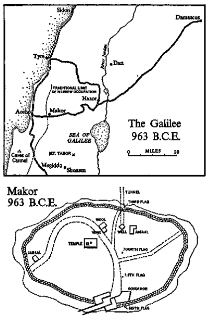

Horned altar
Horned altar cut from one piece of basalt rock using iron tools. Makor, 1116 B.C.E. Bull’s head carved in low relief. Aperture for blood of animal sacrifices. Religious significance of the four corners known as “horns” not clear, but on consecrating a new altar the blood of animal victims was rubbed on each of the horns, according to the directions given by Yahweh to Moses in Exodus 29:12. “And thou shalt take of the blood of the bullock, and put it upon the horns of the altar with thy finger, and pour all the blood beside the bottom of the altar.” Fugitives seeking sanctuary, even from the king, were secure so long as they grasped the horns of the altar, as explained in I Kings 1:50: “And Adonijah feared because of Solomon, and arose, and went, and caught hold on the horns of the altar” Deposited at Makor in late spring, 963 B.C.E.
It was morning in Makor. Birds chattered on rooftops and children played noisily in the crowded streets below. As the little town nestled securely within its girdle of newly built stone walls, the door of the governor’s quarters opened for the departure of a chubby man who wore a dark scowl on his fat bearded face and a host of freckles on his bald head. Obviously disappointed over some adverse decision handed down by the governor, he entered upon the curving main street of the town and walked disconsolately homeward, but he had gone only a short distance when he was joined by a group of children who began chanting, “Hoopoe, Hoopoe, Hoopoe!”
He stopped. His worried face lost its scowl and he began to smile until his features formed a great half-moon, reaching from the back of his bald head to his chin, all wrinkled in laughter. Catching up a little girl, he tossed her in the air and caught her with a kiss as she fell back to his arms. “Sweets, sweets!” she squealed, so he put her down and began gravely searching his pockets as if he did not know where the treats were hidden. Other children ran up and danced on nervous toes as he continued feeling his robe, from which he finally produced a cloth bag filled with sweetmeats. Distributing them to the children, he continued homeward as the crowd at his heels cried happily, “Hoopoe, Hoopoe!”
For as long as men had existed upon the land of Israel they had been accompanied by a curious bird, the hoopoe, who had given them more amusement than any other living thing. He was a stubby creature, about eight inches long, with a black and white body and a pinkish head, and was remarkable in that he walked more than he flew. He was always busy, hurrying from one spot on the ground to another, like a messenger responsible for an important mission whose details he had forgotten. The laughable bird seemed to go around in circles, trying to recall what he was supposed to be doing.
His appearance added to his grotesqueness, for he had a head shaped like a slim, delicate hammer, which he tripped up and down with surprising speed. One end of the hammer-head was obvious, a yellow bill nearly two inches long, but the balancing end was amazing, a tuft of feathers also about two inches long which could be either compressed into a single projection that matched in size and color the beak or flashed out into a spreading crest, so that the bird seemed to be wearing a jeweled crown.
As he hurried about the ground he probed into worm holes until a grub was located or insects were caught hiding, whereupon the hammerhead would thrash up and down until the long beak grabbed the meal. Then the happy bird would strut away to some rock where he would throw the captive onto a hard surface through which it could not escape back to earth, and the hammer-head would flash up and down as the bird tore the grub or insect apart and ate it, after which he would go waddling back to the hunting ground, poking his inquisitive head here and there.
As long as man remembered, this comical bird had been called the hoopoe because of its ugly, short, sharp call. It could not sing like the lark, neither could it mourn like the dove, and to the men of Israel it evoked no poetry summarizing the earth on which they lived. To the Egyptians the hoopoe was sacred; to the Canaanites it was clever, for Baal had given the bird an evil smell and then hidden rare jewels in its nest, and the smell kept thieves away. To the Hebrews the hoopoe epitomized family loyalty, for young birds tended their parents with care, covering them on cool nights and plucking dead feathers from their wings in the moulting season. But to all, the funny little bird that could fly and didn’t was an object of amusement, and even seemingly important men like the governor often stopped their work to watch these busy little excavators.
During the last years of the reign of King David in Jerusalem, the town of Makor had an engineer whom its citizens called Hoopoe because he, too, hurried about most of the day, peering into holes. Like the bird for which he was named, this short, dumpy fellow was regarded with affection, partly because he made the citizens laugh and partly because he was known to be a man without a single malicious intent. He was so amiable and generous that the governor, in a rare moment of clarity, said of him, “Hoopoe is the happiest man in this town, because he loves his work, his wife and his gods, in that order.”
Hoopoe’s work was the building of the new defense wall around the town of Makor, a task on which he had been engaged for some years. His wife was the inquisitive young woman Kerith, whose father had been a priest and who had once taken her to Jerusalem, where she had actually seen King David in his grandeur. And his gods were the traditional ones of Makor. There was Baal, the old familiar watchman of the Canaanites, who still lived in the same monolith on the same high place, watching over mundane activities like water supplies and the building of walls; and there was Yahweh, the god of Moses, a new Hebrew deity who had developed step by step from El-Shaddai, a god now so mighty that he controlled both the high heavens and the deep heart of man. In Makor there were a few Canaanites who worshiped only Baal, a few Hebrews like Kerith’s father who worshiped only Yahweh, and the great mass of people like Hoopoe who had accepted Yahweh as the awesome deity of the outer heavens while continuing to worship Baal as the local deity for day-to-day problems.
Hoopoe was thirty-nine years old, the father of two lively children by his attractive wife, and of several others by his slave girls. In spite of his humorous appearance he was a man who had conducted himself with courage in his younger years while fighting for King David, and it was because of this loyal service that he had been given the job of rebuilding the wall of Makor.
He was a short, stocky man with broad shoulders, big muscles and an oversized bottom which wiggled when he walked. His bald head was overlarge and on it he wore no covering. He had a pointed nose for probing into corners to detect where builders had tried to substitute crumbling earth in place of solid rock, and he wore a square-cut black beard which quivered when he laughed, and he had blue eyes. In fact, he looked much like a chubby version of his well-remembered ancestor, Governor Uriel, who had perished four hundred and fifty years ago while trying to keep Makor from being burned by the Hebrews, as related in a group of clay tablets stored at Ekhet-Aton in Egypt. In the decades following that disaster the great Family of Ur, like many Canaanites, had accommodated itself easily to Hebrew rule, becoming nominal Hebrews. Hoopoe’s parents, hoping that their son might win the confidence of the ruling group, had given him the chauvinistic Hebrew name of Jabaal, which meant “Yahweh is Baal,” trusting that this would imply that he was more Hebrew than the Hebrews, and this mild deception had worked, for Jabaal was accepted not only as an honest Hebrew, but also as the son-in-law of a priestly family.
These were the exciting years when Hebrews controlled for a few brief decades a well-knit empire which King David had put together from fragments left scattered around by Egypt and Mesopotamia when their vast holdings fell apart. David’s kingdom reached from the Red Sea on the south to Damascus on the north and provided the Hebrews with unexpected wealth, since it sat athwart most of the major caravan routes and derived much profit from them. Even Aecho, that constant thorn in the flank of the Hebrews, had been captured from the Phoenicians, although it was not held long; and this rapid growth of empire meant that Makor, key to a fluid frontier, was now of more significance than before, and the judges and kings were interested in keeping it a Hebrew bastion if it could be maintained without too much cost to the central government. King David and his generals had therefore been pleased when they heard that in the little town there was an engineer who acted as if he were in charge of the empire’s main city: he worked ten and twelve hours of hard labor each day and spent additional time in planning the schedule for others. As a user of slaves he was unusual, for he treated his men well and few had died under his custodianship. Moabites, Jebusites, Aramaeans, Philistines and Amalekites all found it tolerable to work for Hoopoe, for on the job he fed them well and allowed them to rest when they became sick. In fact, they enjoyed seeing him come paddling along the ramparts, sticking his sharp nose into this area or that and joking with them as he encouraged them to speed the construction.
In the evenings he came to their miserable camp outside the walls, bringing them scraps of food or dregs of wine, and often he raised the subject of their accepting the Hebrew god Yahweh, always on the reasonable ground that if they did so they could become Hebrews and thus regain their freedom. He carefully explained that they were free to maintain their former gods, as his own name proved, and he was an effective missionary, for he spoke in the language that practical men could understand. “My god Yahweh is like your god Dagon,” he assured the captured Philistines, “only greater.” And he made it both easy and honorable for his slaves to become Hebrews. In this way his corps was constantly diminished, but from it went converts of good character to serve in other parts of the Hebrew empire, and it was one of these former slaves who finally carried the good name of Jabaal the Hoopoe to Jerusalem, where General Amram, in charge of fortifications in the empire, heard of the master builder in the north.
“One of these days I must see what the man has accomplished,” the general said, marking the name of Makor in his memory.
The new wall which Hoopoe and his slaves had finished was made necessary by the gradual submersion of the old Canaanite wall. Alternate burnings and rebuildings had piled an additional eight feet of rubble on the mound, bringing it level with the top of the walls, so that something had to be done; but as the mound grew in height its crown of usable land contracted in size, which meant that the new walls could only be built inside the old ones, and when Hoopoe did this, the area available for the town was sharply diminished. In Governor Uriel’s day fourteen hundred Canaanites had lived inside the walls, but now only eight hundred could do so; however, the tranquillity brought to the area by King David’s good government permitted nine hundred farmers to live outside the walls, the largest number who had ever done so. This was the golden morning of Makor, the glorious apex of the town; it was also the period when Hebrews were demonstrating their ability to govern a kingdom, and if Makor were to be taken as the criterion, they governed well.
Hoopoe, for example, lived in a comfortable house in the west portion of the town, and now as he walked homeward along the curving street he could see a visual summary of Makor’s affluence. The governor’s quarters were substantial and from then he dispensed an impartial justice which protected men in their ownership of fields and property. According to the ancient laws of the Hebrews the weak had rights, the pauper had a claim upon the charity of his neighbors, taxes were allocated fairly and punishment could not be capricious. The shops that lined the first part of the curving road were filled with materials imported from many parts of the world: faïence from Egypt, brocades from India, silk from Persia, delicate bronzeware from Cyprus, beautiful pottery from Greek islands and marvelous ironware from the nearby Phoenician city of Aecho, plus the ordinary trade goods brought by regular caravans from Tyre, Sidon and Damascus. In back of the shops stood the spacious houses, built of stone for the first two or three feet, then finished in wood and lime plaster, with strong wooden ceilings and lovely courtyards. To the left as Hoopoe started home stood the ancient temple of Epher, now an inconspicuous building where men worshiped Yahweh, and across from it the little shops that sold the day’s necessities: wine and olives, bread and wool, meat and fish brought inland from the sea.
Two characteristics marked Makor in these days. Almost none of the shops were run by Hebrews, for they had originally been a desert people, unused to commercial ways, and they instinctively avoided occupations like shopkeeping or moneylending, partly because they had no aptitude for such ventures and partly because they had leapfrogged from nomad life to farming, and their love was for the land and the seasons. “Let the Phoenicians and the Canaanites run the shops and deal in gold,” they said. “We will tend the flocks, and in the end we will be the better off, for we shall stand closer to Yahweh.” The second distinguishing mark was that culturally Makor remained pretty much a Canaanite town. For example, it held to the ancient calendar of Canaan, which was divided into two seasons, the hot and the cold, and in Makor the new year began in ancient style at the end of the cold, but certain other parts of the Hebrew empire had begun to favor a year beginning at the end of the hot. The temple building and its rituals were of Canaanite origin, for on that spot El and Baal and Astarte had long been worshiped, and it was only logical that when the grandson of Epher introduced Yahweh to the town, the new god’s temple should have consisted merely of a refurbishing of a building dedicated to the old. In fact, when the average citizen of Makor prostrated himself before Yahweh he could scarcely have explained which god he was worshiping, for El had passed into Baal and he into El-Shaddai and all into Yahweh, the god of Moses our Teacher.
These were the great formative years of the Hebrew ritual, for from Jerusalem, King David and his priests were endeavoring to impress upon Israel one clearly defined religion, but these reforms were slow to be adopted in Makor; its little temple continued to function as the focus of an ancient community ritual rather than as a surrogate of the unified national religion.
Near the end of the street stood the house of Hoopoe, built many years before by his ancestors and occupied by a succession of decent men who had tried to live decent lives. As Canaanites they had often had to dissemble regarding their allegiance to Baal, but that was about as far as their duplicity went; in recent generations they had become outright converts to Yahweh, circumcising their sons and marrying their daughters into the best Hebrew families. This process of assimilation had reached its climax when Hoopoe had become betrothed to the only daughter of Shmuel ben Zadok ben Epher, the Hebrew priest, and now this couple had taken over the family residence.
It was built mostly of stone, plastered on the inside to a cool white finish. Two of the rooms bore murals in red and blue paint, not showing particular scenes but indicating the desert from which the Hebrews had come and the hills which had been the homes of the Canaanites; but the principal adornment was Kerith, Hoopoe’s lovely wife of twenty-seven. She was slightly taller than Hoopoe and much slimmer. Her face was better proportioned, too, with a shapely nose, blue Hebrew eyes, ivory skin and dark hair. Her husband loved her to the point of foolishness, and since he knew that she cherished jewelry, not acquisitively but as works of art, he often bought her bits of glazed ware made in Egypt or enamel from Cyprus; but these minor treasures she kept in small rosewood boxes and wore only a large pendant made of silver from Persia into which had been set a rough oval of amber brought down from the northern countries. Against the gossamer woolen gowns which she preferred, this golden amber shone with a radiance matched by the wide bands of yellow cloth with which she often hemmed her robes. She was a tensely perceptive woman, intelligent, devoted to her children and an adornment to her fat little husband. Between them there was a genial relationship, for if in Makor there were more handsome men—and Kerith could see many in a ten-minute stroll through the streets—there were none who would have adored her so. Only one significant difference existed between them, and this was vital: Kerith was the daughter of an austere religious man who had almost known Yahweh face-to-face and from whom she had inherited her commitment to that deity; Hoopoe as a builder who had to work with the earth was willing to acknowledge Yahweh, but he also knew from hard experience that Baal ruled the soil and it would be folly for an engineer to ignore or denigrate the permanent deity of the earth in which he had to work. In many Makor families this dualism existed, but usually it was the man who inclined toward the Hebrew god while his wife held superstitiously to the old familiar deities; in Hoopoe’s case it was the Family of Ur’s timeless preoccupation with the land that had reversed the process, but he and his wife lived in harmony, for each was tolerant of the other’s spiritual attachments.
Now, in the month of Abib in the spring of the year 966 B.C.E., when spring rains marked the day and floods filled the wadi, when barley was ripening in the fields and anemones and cyclamen were reappearing along the swamp, nodding to that strange flower which people of another religion would later call jack-in-the-pulpit, in this month of Abib when the rebuilding of the walls had ended, Hoopoe walked home along the curving street in some dismay, and when his wife greeted him at the door of their home he fell heavily onto the earth-and-tile bench.
“I’m worried, Kerith,” he said.
“I saw your new walls and they seem very solid.” She brought him some barley cakes and a drink of hot wine mixed with honey, and he relaxed.
“When I was inspecting them today I looked down upon the richness of this town. In back of this street, the best dye vats in the north. Outside the walls, the resting places for the camel caravans. And these good houses. Kerith, this town is a temptation to all our enemies to the west. It’s the gateway to Jerusalem.”
“But isn’t that why you built the wall?” she asked.
“The wall will hold them off. Of that I’m sure. But do you know how we’ll lose this town?”
She knew. Like all the young women of Makor she had often placed her water jug upon her head and walked through the postern gate and down the dark waterwall to the well. One day during the siege four years ago, when she was pregnant with her youngest son, she had made the dangerous journey and had heard Phoenician warriors trying to pierce the fragile protecting walls, and the people of Makor knew then that if the Phoenicians had brought their siege engines against the well instead of trying to reduce the old town walls they would have captured Makor. It was illogical to suppose that in the next invasion, when the new town walls would appear so formidable, the invaders would again fail to hit upon the obvious strategy of knocking down the waterwall. Kerith well knew that whenever the Phoenicians really wanted to capture Makor they could, and she acknowledged that her husband’s new wall represented not security but an additional hazard; but in the tentative discussions that would recur in the weeks ahead she would refuse to admit these facts because of the complex reasons which now kept her silent. She loved her dumpy little engineer and supported him against men like the governor who viewed him with amusement, but she also knew that if Hoopoe launched some extensive new building project in Makor she would be held prisoner in the town and thus her dream of the future would be destroyed.
Therefore it was with apprehension that she heard him say, “I’ve made up my mind. The Moabite and I have a plan that will save this town. Today the governor wouldn’t listen, but tomorrow he must.”
Convinced that she was doing right, Kerith placed her hand on Hoopoe’s arm and said quietly, “Don’t make a fool of yourself, Jabaal. If the governor doesn’t agree with you, don’t argue. You can find work elsewhere.”
Her words soft and reasonable, her voice low and comforting had an almost frightening effect on Hoopoe, for he understood exactly what they meant, and for a fleeting moment he was prepared to sit down with her now and to speak frankly of all problems confronting them; but so many significant ideas were involved that he shied away. He loved Kerith too much to disturb her before his plans were formulated, so he finished his sweet wine and carried a roll of scraped leather into another room, where he stayed up late drawing rough sketches of his scheme to save Makor, and in the morning, after he had started his slaves upon their work, he reported to the governor’s office, where he told that official, “Sir, now that the wall is completed I grow more worried about our water supply.”
“I asked you to mend the waterwall,” the governor said. “I inspected it the other day and your Moabite did an excellent job on the repairs.”
“Sir! It fools no one. Fifty Phoenicians could knock it down.”
“Last time they overlooked it.”
“Next time they won’t.”
“What do you want to do?” the governor asked. “Have your slaves build a new set of walls?”
“I have a much different plan,” Hoopoe said.
The governor laughed. Placing his hand on the shoulder of the fat builder he said condescendingly, “I understand your problem, Hoopoe. You’ve finished the town walls and you’re afraid that if you don’t start something right now Jerusalem will take away your slaves. Isn’t that it?”
“I’m concerned not about slaves but about the safety of my town.” He corrected himself. “Your town.”
The little man had spoken with such gravity that the governor had to listen. “Well, what is it?”
Hoopoe gulped from nervousness and made the first formal presentation of his daring scheme. Using his hands as great shovels he said, “Here in the center of town, inside the walls, we must dig a shaft almost as big as this room straight down through rubble and solid rock for ninety cubits.” The governor gasped. “At the bottom we begin to dig a tunnel that will take us far under the town walls and out to the well.”
“How long a tunnel?”
“Nearly two hundred cubits, and high enough for women to walk in. Then we bury the well under mound after mound of rock, and we are secure from any besieger.” He moved his right hand back and forth to indicate women walking in safety through the subterranean passageway.
To the governor the concept was so fantastic that he could only laugh. He was unable to visualize a hole almost as big as his room, sinking so far into the earth; and as for the idea of a tunnel burrowing through solid rock and somehow striking the well, he knew this to be folly. “Hoopoe, we need no more digging around here,” he told his engineer. “Get yourself a farm outside the wall and dig for worms.” His joke appealed to him, so he bobbed his head up and down like a hoopoe bird and added, “For worms! You understand?”
Hoopoe hid his resentment. “On one point you’re right, sir. We should start this before they take away our slaves.”
“See! I knew that’s what worried you.”
“It does. We have a trained team now. The Moabite is the best foreman we’ve ever had in Makor, and the others make a fine unit.”
“I’m sure Jerusalem will take the slaves,” the governor said. Showing his engineer to the door he bobbed his head up and down several times. “You go dig worms.” And he closed the door on the preposterous idea of digging a hole through the heart of the town.
Hoopoe did not go to the workings but wandered home, where he laid before Kerith his intricate plan: shaft, tunnel, burial of the well; and she irritated him by saying that she was sure the plan wouldn’t work. “How could anyone start from the bottom of a shaft, dig a sloping tunnel, and hope to find a thing as small as a well?”
“That’s my job.”
She laughed. “How will you see underground? Like a mole?”
He was weary from trying to explain ideas to people who could not visualize them, so he kissed his wife good-bye and climbed onto the ramparts back of his home; and the mound on which Makor stood had now grown so high that from the walls Hoopoe could look westward and see Aecho, where Phoenician ships from many ports brought the men and the riches which would one day be thrown against Makor. How far away the tempting city looked to one who had seen it only as a boy; how close it seemed to a man who understood the power and cupidity of the Phoenicians.
In deepening gloom he walked along the ramparts to the north edge of town, where he studied the doomed waterwall as it left the postern gate and ran to the well, but he did not spend much time worrying about that obsolete system which had rarely impeded a determined adversary. He looked instead down into the wadi and up the opposite slopes until he reached a point on the mountainside above which stood the monolith to Baal. He satisfied himself that on the mountain he could reach the point he sought. “I know it’s possible,” he growled. And then he looked again at the waterwall, and in its place he visualized the combination of shaft and tunnel that would comprise his system. Imagining it to be already in operation, he looked westward at Aecho and thought: When the Phoenicians do strike at us again they will find no well to attack.
But for some weeks it looked as if there would be no system of tunnels, for when Hoopoe returned to the governor’s office, fortified with new enthusiasm, he accomplished nothing. The governor had won Jerusalem’s respect by sending surplus income to the capital rather than asking for assistance, and he had no intention of reversing this process. He would not divert Makor’s wealth into a bunch of hoopoe holes struck here and there in the ground. “If I took this plan to Jerusalem,” he predicted, “they’d hoot me out of the capital.”
Hoopoe became angry. “How could you take the plan to Jerusalem? You don’t know what it is.”
“I can recognize waste without seeing plans,” the governor replied, and a servant showed the engineer to the door.
In order not to lose his well-co-ordinated team of slaves, Hoopoe put them to work resurfacing the temple square. When this was done he started them on two additional silos for wheat storage, and as the slaves dug deep into the earth of Makor, waterproofing the sides with lime plaster to keep out insects and seepage, he often climbed inside to inspect the work; and when his round face and black beard appeared at the openings as he came back out, townspeople would cry, “What you looking for, Hoopoe? Worms?”
But in the evenings, when his slaves were dismissed, Hoopoe used to go to the northern wall and continue the calculations that would form the basis of his work if the water system were ever authorized. Judging from the relative terrains he deduced that he would have to sink his main shaft from a point inside the postern gate through some forty feet of rubble that comprised the mound, then ninety feet below that through solid rock, at which level he would begin his sloping tunnel, which would run for a distance of about two hundred and eighty feet to the well. The finished system would thus require about four hundred and ten feet of boring, mostly through solid rock. “But in the end we’d have a system that no enemy could touch.” He could see women walking down the stairs of the shaft, bearing empty water jars on their heads, then reaching the tunnel and walking along an easy slope to the buried well, impervious to enemies that might rage above. Even to the imagination Hoopoe’s system imparted a sense of security, so one evening toward the end of Abib he finished his master drawing on the leather and began scratching working details onto a set of small clay tablets.
It was frustrating to have no one at hand with whom he could discuss his revolutionary plan—the governor could not imagine what abstract lines meant and Kerith was hampered by her initial visualization of Hoopoe as a mole digging blindly in the earth—so late that night he rolled up his leather and left the town, heading for the slave camp outside the walls. It was a ghastly place, the last way station of futility, where prisoners from many nations were herded in foul pens and fed on slops, Hebrew guards ringed the encampment, ready to kill those who tried to escape, and the slaves dragged out their lives in the misery of forced labor until after a few cruel years they died. Only two justifications could be found for the ugly system: when Hebrews were captured by Egyptians or Amalekites they were treated the same way; and from these particular slave pits there was a steady flow of men into positions of responsibility or even freedom, because Hoopoe despised the system and did what he could to liberate men from it. Many of the present citizens of Makor had started their local lives in this foul camp and in response to the engineer’s pleading had converted to Yahweh and had won a new life.
On this night the engineer ignored the ordinary pens festering with rats and sought the worst part of the slave area, the walls within the walls where dangerous prisoners were kept, and there, lying on a rush mat, he found a tall, clean-shaven, rugged man some years older than himself. He was well known in the town as Meshab the Moabite, a man of extraordinary fortitude, captured by King David in one of his wars against Moab, and he was the most resourceful and intelligent of the slaves, For the building of the wall he had served as Hoopoe’s foreman, and from his rotting bed he now raised himself, half insolently, on one elbow to greet his superior. The faltering old lamp that Hoopoe carried showed the man’s strong face against the filth, and the engineer said, “Meshab, the time has come to build the water system.”
“It can be done,” the big slave grunted, “if you solve one problem.”
“We face many. Which one?”
“The shaft we can dig. The tunnel we can dig.”
“Then you’re not afraid of the rock?” Hoopoe asked.
“You get us iron tools from the Phoenicians,” he growled, “we’ll cut the rock. But when we stand hidden at the foot of the shaft, how will we know where to start our digging to reach the well?”
Hoopoe laughed nervously. “My wife asked the same question.”
“What did you tell her?”
“I said, ‘That’s my job.’”
“You have a plan?” the slave asked, sitting upright among his foul rushes.
“When I was a boy we used to recite an old Canaanite proverb: ‘There be three things which are too wonderful for me, yea, four which I know not: The way of an eagle in the air; the way of a serpent upon a rock; the way of a ship in the midst of the sea; and the way of a man with a maid.’” The flickering light threw deep shadows across the bald head and composed features of the engineer, disclosing the face of one who even as a child had wondered about the natural world. “‘The way of a ship in the midst of the sea’” he repeated softly.
“What have we to do with ships?” Meshab asked, for he had never seen the sea nor the ships that go upon it.
“One day years ago when I was in Aecho with my father, we walked along the sea front and watched as a small ship … Meshab, it was so small it had no right to be upon the waves. Rocks lurked everywhere and there were shoals, but somehow this little ship from Cyprus picked its way exactly into harbor. How?”
“Magic?”
“I thought so, but when I asked the captain he laughed and pointed to three flags rising from the tops of buildings far inland. ‘What are they?’ I asked. ‘The range,’ he said, and he explained that a sailor lost at sea, if he watches those flags and keeps them in line, will be on a secure course to his anchorage.”
The two men sat silent while bugs, attracted by the lamp, whirred in the night and snores came from filthy mattings where exhausted slaves were sleeping. Then Hoopoe said, “The other day…” He stopped, considered his words and started over. “I stood on the north wall by the postern gate. I could see where the well was. And looking up the mountainside I could see a spot at which we could put a flag…” He paused. “No, we’d need two flags.”
He had scarcely spoken the word two when Meshab caught his wrist. “We’d have a range. We could see the flags from inside the walls and they’d control our direction.”
Excitedly Hoopoe placed his clay lamp on the ground and tried to clear away a small area on which to spread his leather, but even the earth was contaminated, so Meshab, with a bold swipe of his right arm laid bare an area, and in flickering light Hoopoe showed his slave the well, and the mountain behind. Poking his finger at a spot halfway up the slope he said, “If we put our first flag here, and our second here…”
“Our third, our fourth…” With great jabs of his finger Meshab indicated the fifth and sixth flags, placing the last on the roof of the governor’s quarters. “It would work! We’d have a range!”
“You have seen into my mind,” Hoopoe said in a solemn whisper, and the two men were so tantalized with the project that they could not wait till morning and wanted to climb the mountain that night to check their theory, but at the gate leading from the camp, guards stopped them, warning Hoopoe that Meshab was a dangerous prisoner who must not leave the compound.
“He is my foreman, and I need him,” Hoopoe replied.
“He has killed many men,” the guard said, but Hoopoe took him through the gates on his own recognizance and they entered the moonless night.
They crossed the road to the walls of Makor but did not enter the zigzag gate. Instead, they circled to the north where the waterwall made a small circle, indicating that the well lay beneath. Climbing to the roof they stuck there a small cloth which would be visible from a distance. They then left the well and started to climb the mountain of Baal, halting now and then to look behind them, and when they reached a spot which put them well above the level of the town they stopped to review their position, and the Moabite said, “Here we put our first flag. Let’s wait a little and the moon will rise.”
They sat in darkness and studied as much of the town as they could see in the flickering lights which burned in some areas like distant stars on a murky night. The slave was much larger than Hoopoe, more powerful, and he could easily have killed the engineer and fled westward to Phoenicia; instead, he sat beside his friend and said, “Now that we’ve seen the town from here I’m convinced we can do it.”
When the three-quarter moon rose over the Galilean hills, the water-wall stood out clearly, a sharp, straight line leading from the postern gate to the well, and the two planners maneuvered themselves until they stood in a direct line with that wall. Hoopoe said, “See how the line projects itself across the town till it intersects the roof of the governor’s house.”
“That’s where we’ll put the sixth flag,” Meshab said, and he could visualize that unfaltering range which the engineers would use to maintain their orientation when digging the first deep shaft, but he could also visualize himself at the bottom of that shaft, about to start the tunnel toward the unseen, unknown well. “There’s the hard part,” he growled. “From the bottom of the shaft, how can we see the range?”
“That’s my job,” Hoopoe said and he was about to lead the way back to the slave camp when he saw, coming down the mountain, a chain of people bearing torches. They had spent the night on the high place, worshiping Baal in the old manner, and since this god had been so generous to the engineers that night, Meshab suggested, “Perhaps I too should go to the high place to worship Baal?” And Jabaal said, “I shall go with you,” and the two men crossed the mountainside until they came to the footpath which the pilgrims had descended, and this they climbed to the sanctuary which had been the site of worship for more than a thousand years.
At the crest of the mountain they found the monolith, long sacred to Baal, at whose feet lay the familiar signs of a placid nature worship: some flowers, a dead pigeon. Makor no longer worshiped a fiery god who consumed children; there were no public prostitutes administering to Astarte, for such practices the Hebrews suppressed. But the quiet worship of Baal they had been powerless to eliminate because it was the Hebrew farmer as well as the Canaanite merchant who felt the need of this vital deity; even King Saul had paid his homage to Baal by naming his sons after the kindly god. Occasionally the Hebrew rulers of Makor discussed outlawing the Canaanite god, but pressures from the people kept the deity alive. Now in King David’s reign directives had come from Jerusalem suggesting that the time had come when the worship of Baal must be forbidden, but governors of the recently conquered northern regions, with large Canaanite minorities, had always cautioned against precipitate action which might later be regretted. In this way Makor kept its ancient deity, and citizens climbed regularly to the mountain seeking assistance from the one god they knew personally—the god who had always insured the prosperity of their fields.
Meshab the Moabite knelt before the monolith, repeated prayers he had learned in the southern desert, then rose prepared to accept once more the stinking slave camp to which Baal had temporarily assigned him, but before he could start his march down the path, Hoopoe asked, “Why aren’t you sensible? Why not accept Yahweh and become a freedman?”
Then Meshab voiced the difference between himself and Hoopoe. “I live and die with Baal,” he said quietly, and it had been this intransigent answer thrown at King David after his capture in Moab that had prevented him from now being a Hebrew general.
“Wait,” Hoopoe said, drawing the big man onto a rock from which they could see both Aecho and Makor in the moonlight. “My family used to be like you, contemptuous of the Hebrew god. For centuries out of mind we worshiped Baal. But gradually we came to see that the Hebrews …”
“Aren’t you a Hebrew?”
“I am now. But not long ago my people were Canaanites.”
“How could that be?” Meshab’s own family had died rather than surrender their god.
“We lived in Makor side by side with the Hebrews in an easy friendship,” Hoopoe explained. “One of my ancestors named Zibeon made believe he was a Hebrew, and once or twice he fell into trouble. But in the end the Hebrews discovered that they needed Baal and we found that we needed Yahweh. And we’ve all prospered ever since.”
“How could you be false to your god?” Meshab asked suspiciously.
Hoopoe looked down at the walled town of his ancestors, the scene of the struggle between the two great deities, and it was difficult for him to explain the power that Yahweh had come to exercise upon the minds of Canaanites who had sought the truth. “All I can tell you, Meshab, is the legend I learned as a boy. Our people lived in the town with Baal, and from the desert came the Hebrews on donkeys bearing their god El-Shaddai. They camped outside the walls and a great battle developed between the two gods for the possession of the mountaintop. Baal triumphed of course, so in revenge El-Shaddai burned the town and gave the ruins to the Hebrews. For many years El-Shaddai ruled down in the valleys and Baal ruled up here. But after some centuries an agreement was reached, and the Canaanites accepted the new god Yahweh and the Hebrews accepted the old god Baal, and we have lived in contentment ever since.”
“You say that Yahweh is a new god?”
“Yes. Another group of Hebrews went down into Egypt, where they were treated rather badly, and the god they had taken with them developed into a most powerful deity, capable of striking his enemies with terror. This new god, Yahweh, brought forth the man Moses, who led the Hebrews out of Egypt and guided them for forty years in the desert, where Yahweh became more and more powerful … unlike any god ever known before. Under Yahweh and Moses the Hebrews became a driving force …”
“We knew Moses,” the Moabite interrupted. “He tried to enter our land, but we drove him off.”
“We Canaanites were not able to do so,” Hoopoe said. “So now Yahweh rules us all.”
With some accuracy Hoopoe’s legend reflected history. Centuries before old Zadok had brought his clan to Makor, other patriarchs had wandered into Egypt bearing with them an ordinary desert god little different from El-Shaddai, but during the vicissitudes suffered in Egypt and Sinai this god had matured into a supreme concept, notably superior to any deity developed by lesser groups of Hebrews who had stayed behind, so that when the tribes which had coalesced around Moses returned to Canaan, the superiority of their god Yahweh was manifest to all. This maturing of Yahweh was another instance in which a challenge had produced an illumination which an easy acceptance could not have. The complaisant town of Makor with its amiable gods could never have produced Yahweh; that transformation required the captivity in Egypt, the conflict with the Pharaohs, the exodus, the years of hunger and thirst in the desert, the longing for a settled home and the spiritual yearning for a known god … these were the things required for the forging of Yahweh.
Yet even in his hour of triumph over the lesser gods of the Hebrew tribes, Yahweh remained only the god of those Hebrews. The time had not yet come, in these years of Saul and Solomon, when the people of Israel would openly propose that their god should rule universally; such extension would not take place for several centuries. But now in the time of David, Yahweh was acknowledged as the god of all the Hebrews, from north to south, and the various covenants which he had concluded with his chosen people from the time of Abraham were recognized as binding even in remote spots like Makor. The various Els—the Elohims, the Elyons and the El-Shaddais—were now happily merged into the great successor.
But as Yahweh grew more powerful he also grew more remote, so that it was no longer possible to walk with him in the olive grove; it had been four hundred and fifty years since the last Hebrew of Makor had spoken with his god directly. That last conversation had involved General Epher after the destruction of Canaanite Makor. When the temptation to worship Baal had become too alluring, the red-headed general decided to move his Hebrews to some cleaner spot, but on the eve of departure El-Shaddai had appeared for the last time, saying, “Have I not brought you to this town and delivered it to you after manifold difficulties? Is it not your responsibility to accept it as it is and to make of it something good?” So Epher had built a new town upon the ruins of the old and it had prospered and influenced the countryside. Thus, in later years, when the unified Hebrews of Moses had come across the Jordan from the east, they had found in many obscure corners of Canaan little settlements like Makor prepared to accept Yahweh.
But the remoteness of Yahweh, his stern invisibility, made it inevitable that many Hebrews would cling to lesser deities who provided them with the personal warmth that Yahweh no longer did. Baal still flourished throughout most of King David’s empire. Astarte was worshiped in many places and fire gods who consumed children were being revived; it sometimes seemed that across the land there were local altars under every verdant tree.
As Hoopoe and the Moabite talked of these things, they saw in the moonlight two Hebrew women climbing the hill. They were coming to worship Baal and they did not see the men sitting off to one side, for the women were concerned with domestic worries which only Baal could solve. Climbing, out of breath, to the high point, the women prostrated themselves before the monolith and after a while Hoopoe heard one praying, in short gasps, “Baal… let my husband Jerubbaal come safely home from the sea… let the Phoenicians not molest him… in Aecho protect him… great Baal… bring my man home safely.”
The two women prayed for some minutes, re-establishing their friendly relationship with the ancient god, and as they rose to place their frugal offerings before the monolith, one happened to see Meshab in the moonlight, and she screamed. Hoopoe ran to her, and when she recognized who he was she laughed nervously. “I saw that one,” she said, “and I thought the slave had come to kill me.”
“He kills no one,” Hoopoe assured her.
He recognized the women as Leah and Miriam, two housewives who depended upon Yahweh to guide them on essential matters but who also needed Baal to reassure them on family affairs.
“Why are you praying, Miriam?” Hoopoe asked the second woman.
“My son is going to Jerusalem, and I pray that King David will look upon him favorably and find a place for him in the army.”
“He will,” Hoopoe promised, and she sighed, but when the women were gone back down the hill Hoopoe said to Meshab, “You shall sit here while I pray,” and he went alone to the ancient monolith and prostrated himself before Baal, bringing before that god the domestic problem from which he had retreated: “Dear Baal, my wife Kerith yearns to live in Jerusalem, there with the god of her father. My home is Makor, here with you. But let it be that I shall build my tunnel well and that King David shall see it and call me to Jerusalem to build the things he needs for the glory of Yahweh.” He pressed his face into his hands and with powerful fingertips tried to crush his own skull in a gesture of humility before his god. When the pain in his temples became acute he relaxed his fingers and ended: “Baal, it is not for myself that I ask this thing, for I am content to live with you. But my wife Kerith must go to Jerusalem. Her god is there. Her heart is there. Great Baal, send us to Jerusalem.”
Never before had he dared to voice this confession, either to himself or to his wife, but now he shared it with Baal, and saw nothing contradictory in what he was doing: praying to Baal that he might be summoned to Jerusalem, where he would build temples in honor of Yahweh. Meshab, the stern Moabite, could he have heard the contradictory prayer, would have been filled with disdain; a man should cling to his own god.
For the next two weeks Hoopoe accomplished nothing in his scheme for digging a water system, and he was taxed to find other work for his slaves: the wall was done, the temple court was paved, and soon the silos would be dug. Unless he could think of something soon, his efficient team would be scattered through the kingdom, so he tried anew to enlist the governor’s interest in his shaft-and-tunnel idea, but that official remained unable to comprehend the possibilities and Hoopoe was overcome by gloom, which was not relieved when his wife chanced to question him about their future.
It was a warm spring day, the kind that made the Galilee seem one vast flower garden, and she had gone into the olive grove to pick bouquets with which she adorned the house. Then, because she was tired from the work, she bathed and chose for her dress, by whim and not by design, the costume which her husband loved best: her gray woolen robe with yellow borders at hem and cuff, plus the amber pendant shining like the late afternoon sun. At the door she kissed Hoopoe and cried, “Look at the flowers!” And as he looked she said, for no apparent reason, “I’ll miss the Galilee when we’re gone.”
He tensed, then asked, “Where are we going?” And before she spoke he knew the answer.
“Your work’s done here. We’ll go where they need builders. Jerusalem.”
He took her hands and drew her to him, kissing her again. “Desperately I want to take you there, Kerith. But I wonder…”
“If they’d have you?” She laughed gaily at his fears and told him, “Jabaal, you’re the best builder in the empire. They know.” And for a moment they stood in silent hesitation at the threshold of a discussion which could have brought them understanding; but the stolid engineer was afraid to speak about his fears regarding Jerusalem, and Kerith had not yet formulated those profound moral and philosophical problems which had begun to haunt her. So the golden moment when the pollen of ideas was in the air vanished and she said prosaically, “Something will happen.” And that was all they said that day about Jerusalem.
But in the middle of the month of Ziv, when wheat was in the grain and barley in the bag, Kerith was visiting the governor’s wife when she heard news that seemed to have been created especially for her. “General Amram is coming north to inspect Megiddo,” the governor said, “and he’s promised to visit Makor. Wants to see our new fortifications.”
“Who is General Amram?” Kerith asked.
“He’s in charge of fortifications for King David.”
Kerith clenched her hands to keep from crying out with excitement, but through her being hammered a mighty drum thundering one word, “Jerusalem, Jerusalem!” Finally, when she had gained control, she asked the governor, “May I be excused?”
“You want to tell Hoopoe? More holes for him to dig?” He flashed his head up and down, and Kerith knew she was supposed to smile.
“If I may. Please.” And at the gate she asked the guards, “Have you seen Jabaal?”
“Who?”
“The Hoopoe.” She said this without showing her distaste for the name.
“He’s at the slave camp.”
And she crossed over to the olive grove from which she had recently picked flowers, but this time she passed through it and came to the walled compound where the slaves were kept, and even before she entered that noisome place she was revolted by the smell. She asked the guards, “Where is Jabaal?” and when they did not know she had to explain with some embarrassment, “The one you call Hoopoe.”
“Follow me,” and without noticing what he was leading Kerith into, the guard walked nonchalantly through the filthy outer circle of hovels: rats ran in the road and sunlight fell on piles of straw so rancid that each had its colonies of bugs and lice. The water standing in clay jars was covered with scum, and in the few spots where some slave had tried to beautify the place where he would die, the neatness looked obscene. “Almighty Yahweh!” Kerith whispered. “You let men live here?”
But then the guard opened the inner gate and led her to the walled section where dangerous prisoners were kept, and here not even the sun was allowed: dismal huts with floors still muddy from the rains of spring were marked with piles of rotting straw and shreds of cloth. Broken bowls and food pots gray with filth stood in corners, while the section reserved for the privy was unspeakable. A slave captured on some desert raid, now too old to work, shuffled by unable to stand erect, while young men who would have been tall in their homeland orchards north of Tyre moved glassy-eyed to their death.
“Yahweh, Yahweh!” she whispered, and the thought that this hell existed in the same land with Jerusalem was almost more than she could bear and she felt faint. And then she passed into the meanest hovel of all, and there she saw her husband talking with a man she had not noticed before, the slave Meshab, and something in his controlled, resourceful manner as he bent over the hide filled with drawings gave the place a dignity she could not have believed.
After nodding to the slave she said, “Husband, General Amram is coming to inspect your walls.”
The effect of this information upon the two men was striking. Hoopoe leaped to his feet, not afraid to show his pleasure. “At last we’ll have a man who understands.” But Meshab drew back toward a corner, not through fear, Kerith thought, but in response to some instinctive prudence; and it was obvious that he had known General Amram before, perhaps on a battlefield, for to the Moabites the Hebrew generals had brought much destruction and Kerith could see that Meshab had no desire to meet this particular general again.
However, when Hoopoe in his enthusiasm turned to the slave for confirmation of his feelings, Meshab said, “Amram is one who will understand.”
Kerith now suggested that Hoopoe come home with her to discuss other aspects of this exciting news, so with some reluctance the builder accompanied his wife back through the filth, after which they climbed the ramp to Makor. But at the gate Kerith turned to look at the slave camp and asked, “How can you allow men, humans like yourself, to live down there?”
“They live as long as they do only because of what Pm able to do for them.”
Inside the gates Kerith said softly, “Oh, Jabaal, General Amram is bringing us our freedom.”
“I hope he likes the walls.”
“And if he does,” she suggested shyly, “don’t be afraid to let him know that you were the one who made the decisions.”
As if they did not want to reach home, where the basic reasons for their excitement might have to be explored, they loitered before the wine shop opposite the temple, and there Kerith said hesitantly, “Above all, Jabaal, you must mention Jerusalem.” The little engineer said nothing. “You must ask him to take you to Jerusalem. Now.”
In the spring sunlight Hoopoe swallowed, shifted his feet and said, “No, Kerith. What I must do is explain to him my water system.”
Kerith gave a little cry, as if she had been wounded, then looked about to see if any loungers at the wine shop had heard her. “Dear Jabaal,” she whispered. “Have you lost all reason?” Then seeking to be fair she asked, “If he did approve your tunnel? How long would it take?”
“About three years.”
She bit her knuckles. Three years! Three years more in exile from Jerusalem! Then, giving her husband a smile of love and compassion, she said, “All right. If that’s your dream, I’ll wait three years.” But the prospect, stated in her own words, was frightening and she caught his hands. “What if your tunnel fails?”
“It’s my job to see it doesn’t fail,” he said.
And then she said a word of great significance, not ushered forth by her own will but by her longing: “You’re being a fool.” Never before had she used this word, for she loved her husband and appreciated the tenderness he showed her; but gradually she had been forced to admit that the substantial men of the town, like the governor, had come to look upon her husband as merely an amusing person, running about the streets and poking his sharp nose into cisterns and silos like a true hoopoe bird. Indeed, he was a foolish man. But this sense of disappointment she could have tolerated, like any average woman approaching thirty who saw her husband as he was destined to be for the remainder of their lives together, except that in her case a special dimension had intruded: the holy city of Jerusalem. It had been as a girl in mourning that she had first seen the hilltop fortress recently captured by King David from the Jebusites and her emotions that day were so entangled as to have produced an everlasting effect. It was in the winter that her mother died, and her father had gone up to Jerusalem to pray, and as they climbed out of the flat lands they saw upon a crest of hills a city covered with snow, as pure and white as a stork in spring, and involuntarily she had cried, “Oh, the City of David!” By that name it was known to Hebrews, but in Makor the old Canaanite name of Jerusalem persisted, which was proper, since the city had been Hebrew for only a few years. As Kerith and her father stood looking up through the cold air she had intuitively known that Jerusalem would become famous not for its growth or its fortress walls, but because of the fact that here Yahweh would take his spiritual residence; and from the first moment she saw Jerusalem she longed to be a part of it, to grow with it into its new functions and to share the radiance which was certain to envelop it. From this city the nature of Hebrew life would be determined.
Her father had sensed this when he said, as they continued to stare at the snowy battlements, “Before I die we shall see the temple at Makor abandoned, for in Jerusalem will stand the everlasting temple of Yahweh.” She asked him if he would feel regret at the passing of their little temple, and he replied without hesitation, “Just as our bodies must climb to reach Jerusalem, so will our souls have to climb their spiritual hills to reach Yahweh. It’s time we started.” But he had died before he could lead his people to the new understanding of religion as symbolized by Jerusalem, and the Makor priests who had succeeded him had lacked his vision and had clung jealously to their trivial prerogatives. It was therefore partly in furtherance of her father’s vision that Kerith longed to make her permanent ascent to Jerusalem; but if she had been asked for one simple reason why she yearned for the royal city she would have said honestly, “Because there Yahweh will make himself known.”
Her longing placed her in sharp contrast to her husband. He would go to Jerusalem, but only because it was a city where building was to be done. Because he loved Kerith he was willing to help her gain something she so keenly desired, but her preoccupation with Yahweh he only half comprehended; as a man of Ur he knew that Baal governed the earth of Makor and he was content to build here on the old familiar site. Where he worked and on what was of little importance, for like a good engineer he accepted whatever commissions reached his hands and he never inquired too closely as to their origins. He would have been as happy to build a new slave camp as he would have been to reconstruct the small temple of Makor, for he would have seen in the former job a chance to keep the slaves alive for a longer time, which was a sensible ambition.
So Jabaal the engineer committed to Baal, and Kerith the mystic dedicated to Yahweh came to their home at the end of the street and to that confrontation which would often be repeated within the walls of Makor during its long history: the conscious choice between gods. Like many people faced with this ultimate decision of which god they will worship and in what way, they shied away from direct dialogue, hoping that time would solve the problem and make the decision for them. Kerith started to point out that when General Amram arrived… but Hoopoe did not hear her, for he was already constructing imaginary plans. He rolled up his sheet of leather, collected his drawing materials and returned to the slave camp, where he directed a group of his men to build a rough table at which he and the Moabite could work in the critical days ahead.
On the roll of leather, made from a calf’s skin whose hairy side had been scraped smooth, and using a reed pen and an ink made from soot, vinegar and olive oil, Hoopoe finished the details of the master plan for his water system, and Meshab noticed that he took much care to insure that the diagonal of the shaft followed the range established by the six flags, and he asked why. Pointing to the diagonal, Hoopoe said, “It’s this that will make the tunnel possible.”
Saying no more, he began to impress into soft clay tablets sectional drawings of the various kinds of work that would have to be done, some forty-five tablets in all, and when these were finished Meshab hauled them off to a kiln for baking into permanent form, so that on the evening before General Amram’s arrival the two men had their data complete: a large roll of leather which the general could use for explanations in Jerusalem and the series of indestructible tablets to govern the work in Makor.
Next morning, on a bright day at the end of the month of Ziv, when flowering trees made the Galilee a land of singing beauty, when pistachio bushes sent forth red budlets and pomegranate leaves were a tender green, General Amram and his company rode in from Megiddo upon horses, which were rarely seen in Makor. Children ran along the road to greet the visitors, while at the gates of the city the governor waited with clay pitchers of wine and lavers filled with cold water, which the soldiers sloshed over themselves, drying their heads with cloths supplied by women of the town, among whom was Kerith, who had volunteered to serve the general.
Amram was the typical military leader of the Hebrew empire, nearing fifty, hard and spare, with a close-clipped beard and stubby red hair. He had blue eyes, deep wrinkles across his brow and a short scar along his left cheek; he was relaxed and thoughtful, attentive to the life about him and able to judge it with a detached shrewdness. In these first minutes he saw that Kerith was a beautiful woman of the age he preferred, not entirely happy in Makor, who wanted to impress him with her husband’s accomplishments, and he suspected that if he responded he might have an enjoyable time in this provincial town. So when Kerith handed him a cloth he took it slowly and smiled, showing between his hairy lips white teeth that were widely spaced.
“Your name is?”
“Kerith,” she replied, adding hastily, “wife of Jabaal, who built these fortifications,”
“From the approaches they looked strong.”
Before she could assure him that they were, the governor interrupted to announce that the visitors were invited to his quarters for the speeches of welcome, but after two were offered General Amram said, “I’ve come to inspect the new walls and I wish to do so.” Brusquely he left the ceremony and entered upon the walls, pleased to see that Kerith was staying at his side.
“These are strong walls that we have built,” the governor said unctuously, and Hoopoe, following at the rear, thought: For a whole year I had to fight him for permission to build them, and now they’re his walls. Condescendingly the governor added, “They were built by this man, whom we call Hoopoe,” and he bobbed his head up and down like a hoopoe bird. General Amram’s men laughed, but the general thought: They call him Hoopoe, which infuriates his pretty wife, but he does look fairly stupid.
In his various inspection tours General Amram had often been involved in similar situations and he now saw what he must do in this one: Flatter the husband before his superiors, get him out of the way, and then see what his lovely wife wished to do. Accordingly, he said, “Jabaal, since you’re the one who built the walls, let’s climb that hill in back of town and see how good they are.”
“I’ll bring the wine,” the governor volunteered, but Amram cut him off.
“We’ll go alone,” he snapped, striding off with such vigor that Hoopoe’s fat legs had difficulty keeping up.
For more than an hour the two men circled the town, checking various points, then climbed halfway up the mountain to study the fortifications methodically. “Those slopes of earth leading to the wall,” Amram asked. “Have you thought of protecting them in some way?”
“We’ve considered two possibilities. We could pave the present slopes, which would take much rock. Or we could cut away two cubits of earth all around, which would lay bare the old Hyksos glacis which is paved and in good condition. Which would the general suggest?”
“Neither,” Amram said. “Take too many slaves. And in the end you wouldn’t be a lot better off than you are now. But one thing I would do.” He pointed to a section of wail where private houses were encroaching upon the battlements, using the town wall for one side of the house and continuing it upward, with windows cut into the upper wall. “I’d get rid of those windows right away. Remember how Rahab let down the ropes for our spies at Jericho?”
“What would the general suggest?”
“Brick them up, today. While you still have some slaves.”
Twice General Amram had referred to Hoopoe’s slaves. “Are you going to take away my slaves?” the little man asked.
“When the work’s finished here we can use trained builders in Jerusalem. And it looks as if you were about finished.” He was a gruff man, long in the field, and although he had begun by feeling contempt for Hoopoe, an inspection of the man’s work forced him to recognize it as a superior job. Placing his arm about the little engineer he said, “And I shall tell the king that it was work well done.”
Hoopoe mumbled his thanks, then muttered a silent prayer to Baal and tackled the bigger problem. “General Amram, the new fortifications mean nothing so long as the water supply is vulnerable.”
“From here that waterwall looks strong.”
“It’s been patched. It’s stronger than it was. But we both know that even one of your lesser armies could knock it down.”
The general had to like this honest builder. In Amram’s first minutes on the mountainside he had spotted the fatal weakness of Makor, but he had said nothing, realizing that the town was a frontier settlement which might have to be sacrificed. If the Phoenicians ever decided to assault it, he knew they could puncture the waterwall and strangle the town, but the loss need not be crucial to the empire. Nevertheless, he was impressed that Hoopoe understood the tactical situation.
“But there is a way that Makor could be made so strong that no enemy could capture it,” Hoopoe said, trying to make himself sound convincing.
“How?”
In a few crisp sentences Hoopoe explained that a shaft could be dug in the middle of town and connected by a tunnel to the well. Glancing nervously, he was pleased to see that General Amram understood. “Then we tear down the waterwall, erase all marks that it had ever been there, roof over the well with large stones and bury it in thirty feet of earth. No one would ever see our well again except from the inside of the tunnel.” He became inspired by the concept, and suddenly words spouted from his mouth. He was a poet, a general, compelling in his logic and command of detail. He spoke of the security that Makor would know, a security which the empire would share for centuries to come. “Against this town,” he cried, “the Phoenicians could thunder for fifteen months on end, while your garrison, General, would rest secure inside. Jerusalem would be safe.”
Against his will—for he was not a man prone to enthusiasm—Amram became infected by Hoopoe’s excitement and he was seduced into visualizing Makor as a permanent bulwark of the western frontier. As Hoopoe continued, the little town began to look different: the ramparts became stronger, the fatal waterwall vanished and he saw Phoenician mercenaries beating against the town in futility. Hoopoe stopped speaking and waited.
“What would it require?” Amram asked bluntly.
“The slaves I have. Plus fifty more.”
“Have you plans?” He was sure the enthusiastic little man did.
“Come to my house,” Hoopoe said quietly, afraid lest he appear too eager, and as they re-entered the main gate he called to one of the guards, “Fetch me Meshab the Moabite.”
“Who?” Amram asked.
“My foreman. He has the clay tablets.”
Waiting in the governor’s house Kerith heard that General Amram and her husband had gone directly to her home, and she ran through minor alleys hoping to reach there first so as to receive them properly, but when she ran up, out of breath, the men were already there, lying flat on the floor, studying Jabaal’s leather roll of the water system. “Oh no!” she whispered to herself. “My foolish husband is bothering that great man with such nonsense,” She brought them cool drinks, but they took no notice of her, so she sat where she could watch the general and where finally he found time to watch her while Hoopoe continued to draw imaginary tunnels with his finger.
The three remained thus for some time, when the big Moabite appeared, led by one of the guards. The tall southerner had barely entered the room with his clay tablets when General Amram saw him, leaped to his feet and cried, “What is this one doing here?”
“He is Meshab, my foreman,” Hoopoe explained. “Show General Amram…”
But before the Moabite could lay out the detailed drawings Amram turned his back and said, “Take him away.”
“Sir,” Hoopoe protested, “he’s our best workman.”
“I know who he is,” Amram snapped. “He killed my brother.”
“He was sent to us some years ago.”
“I know when he was sent. I sent him.”
Meshab remained silent as General Amram recalled King David’s struggle against the Moabites. In strict fact, the Hebrews had never really defeated the desert kingdom, for Meshab and a few like him had conducted a brilliant strike-and-run defense, but in the end Moab had been reduced to a kind of vassaldom: “As peace was being discussed, this one struck at our camp and slew my brother. When he was captured I wanted to kill him with my own hands.”
He turned away and silence in the room became embarrassing, but Kerith said, “Place the tablets here, slave, and return to camp.” Her command reminded everyone that Meshab was now only a slave and the tension eased. General Amram thought: That woman’s clever.
At the feasts prepared by the governor, the general had additional opportunity to observe the superiority of this woman, and she, guessing at some of the ideas going through his mind, took pains to present herself appealingly: when he wished dates or honey he received them from her, and by the end of the second day it was apparent to General Amram that Hoopoe’s wife wished to be alone with him.
Hoopoe, preoccupied with the chance of gaining authorization for his water system, overlooked his wife but continued to press upon Amram arguments in favor of the tunnel, so on the third day Amram said, “Hoopoe, why don’t you take your Moabite slave and go up the mountain and see if you can lay out the line of flags you’ve been talking about?”
“We’ve already tried,” Hoopoe said. “We’re sure the plan will work.”
General Amram was irritated. “I’ll tell you what to do. You go up on the hill while he stays here, and you can actually erect the flags.”
A flush of joy came over the bearded face of the fat builder. “Does this mean that you are going to authorize the tunnel?”
“Well…” General Amram had about decided not to waste the effort on Makor, but he could now see, standing behind the builder, his lovely waiting wife and something must be done to get rid of the foolish fellow. “Go ahead,” he said on the spur of the moment. “Dig the tunnel.”
“I’ll bring the governor!” Hoopoe cried, and before either Kerith or General Amram could halt him he appeared with the governor, and the authorization for the tunnel was made official. “Now I’ll go on the mountain and locate the flags,” he cried, and with the joy of a child he ran through the streets, calling for the guards to send him Meshab from the slave camp.
When he was safely gone, when the pompous governor had returned in bewilderment to his quarters, wondering how Hoopoe had persuaded General Amram to authorize the water system, the general suggested to Kerith, “Perhaps the slave girls would like to take the children for a walk,” and when the servants were gone he relaxed easily in Hoopoe’s wooden chair and speculated upon what was to happen next.
General Amram was a man with much experience and three wives, two of whom he had taken from other men, and he fancied this lovely Makor woman. Certainly she had given him cause to arrange this meeting and he could guess the reason why: She’s annoyed with her fat little husband who can do nothing but dig holes in the ground. She thinks of anyone from Jerusalem as a man bringing adventure. He had other clever explanations in which he figured large, but none came close to the problem that Kerith now placed before him.
“I wanted to talk to you so much,” she said, sitting primly on a three-legged stool some distance away.
“About what?” he asked with grand condescension.
“I must get to Jerusalem,” she said in a burst of words. “My husband can build so much there. You’ve seen his work. And I…”
“What about you?” the general asked, leaning forward and showing his wide-spaced teeth.
“I want to be where the worship of Yahweh is pure,” she said softly.
“You what?”
“My father was priest here in Makor, and his father before him as far back as we can remember.”
“What’s that got to do with going to Jerusalem?”
And she told him. For the first time in his life General Amram heard the complaint that was going to echo throughout Israel for many centuries: “In Makor we are far from the sources of Yahweh, but in Jerusalem we could live near the sanctuaries of his holiness. In Makor we share the world with Baal; but in Jerusalem, Yahweh alone reigns. In our little town the great kings are not; but in Jerusalem, David lives, and to be near him is to be near the sun.”
“There are many ways you could get to Jerusalem,” the general said, starting to come toward her, but in innocence she misunderstood his purpose and rose to greet him as if he were a travel-weary member of her family.
“You must be very tired,” she said, leading him to a room where tubs of cool water stood. “May I pour the buckets over your head, and then you can sleep.” She made him take off his upper tunic and bend over a drain, while she washed his head as she would have done her father’s. Then she roughened his hair and chest with a heavy cloth and gave him a robe to throw about his shoulders. She led him to a bed and promised to call him if he slept too long, and as she closed the curtains she happened to see her husband on the mountainside. “He’s still up there,” she said, “waving his arms and making silly signals.”
“I intended him to be there… for some time.”
Kerith looked down at the relaxed general, so close to sleep and in such unexpected circumstances, and asked, “How shall we get to Jerusalem, General Amram?”
The warrior looked up at the enticing woman and smiled. “Help him to build his tunnel. When it’s finished the king will surely hear of it.” And before he fell asleep he pictured Hoopoe on the hill, waving his arms.
Hoopoe’s plan was simple. On a spot above the town, but in line with the waterwall, he had planted the first red flag which for the next three years would serve as the standard marker for the job, since it was visible from all parts of the town. Next he had climbed higher and planted a second flag, establishing a range which passed through the first flag, the well and the middle of the waterwall. Whenever the slaves had these two flags in line they could be sure they were properly oriented for digging the tunnel. This completed, he had begun doing what his wife had described to General Amram as “making silly signals.”
On four different roofs in Makor, Hoopoe had stationed slaves with poles to which red flags had been tied, and by means of prearranged signals he was now moving his slaves back and forth until all were in line with the range he had already staked out on the mountainside. When each man was in position he waved a white cloth, and the slaves began fixing their flags in the permanent line that would be used for digging the main shaft.
Meshab the Moabite had been assigned the roof of the governor’s house, for this rose higher than the others and thus formed a prominent landmark; but as the slave walked back and forth among drying seeds to position the important sixth flag which would anchor the range, he annoyed the governor, who left his quarters to cry, “Who is on my roof?”
A crowd collected as the official began ranting at the slave and there might have been trouble, for the Moabite was loath to take down his needed flag, but just as the governor was becoming ugly, General Amram appeared, washed and relaxed, and he could see the desirability of keeping the flag in its present position. He joined Meshab on the roof to study the range of flags, then summoned everyone including Hoopoe to a council below. “The governor is right,” he announced. “The last flag should not be on his roof.” Hoopoe started to protest, but before he could do so the general added, “But since the flag is essential, why not place it on the wall?”
The crowd murmured its approval of this wise decision, but Hoopoe said, “From the wall the stick will be too short for the flag to be seen.”
“I’ve thought about that,” General Amram said, “and what you must do tomorrow is go into the forest and find a young tree that will be tall enough.”
So the naïve little engineer disappeared into the forest while General Amram returned to the house by the west wall, where he spent the afternoon with Kerith. Meshab the Moabite, working on the wall, saw the trick that the clever general was playing and was incensed. When on successive afternoons Amram devised new ways to keep the fat engineer occupied, the big slave felt a growing bitterness; but his suspicions of what transpired in Hoopoe’s house were not justified. General Amram, at ease in the engineer’s chair, was finding Kerith even more complicated than he had taken her to be on their first afternoon together. She tended her famous visitor as if he were her father, bringing him cold drinks and comforts like a slave, yet rebuffing with charming innocence his attempts to seduce her. Had he been younger he might have wrestled with her; as a man nearing fifty he was amused by the faithful wife and tried to penetrate her reasoning, discovering that she really believed that if she were kind to him he might take her husband to Jerusalem.
“Why are you so dissatisfied with this pretty town?” he asked one afternoon, clutching at the hem of her gray robe as she went past.
Like a dancer from the desert she twisted and her skirt flew out in rhythmic swirls, passing over his hand and leaving an enticing fragrance in the air. He laughed, then listened as she said, “I feel corrupted, living in a town like Makor, where Yahweh and Baal are both worshiped.”
“I’ve found Makor attractive,” he said. “Not as much so as I had hoped.”
She ignored his response and asked, “When you waken in the morning in Jerusalem, doesn’t it thrill you to be at the center of the earth? Where Yahweh dwells?”
General Amram coughed. Kerith was being either naïve or taunting, and in either case he was growing bored. Seeing no reason to prolong evasions he said frankly, “To tell you the truth, I’m loyal to Dagon.”
“Dagon!” Kerith cried, appalled at the idea.
“Yes. I served with King David when he was hired by the Philistines, and I grew to like them. They’re good warriors and Dagon is a powerful god. Oh, I suppose Yahweh is satisfactory too. I know the king worships him, but I’m a fighting man and I keep to simple tastes.”
Kerith stepped back. This man, this famous general, saying without fear that he was loyal to a god made of stone like Dagon. “I’m surprised Yahweh doesn’t…”
“Strike me dead?” Amram laughed. “Oh, I pay homage to Yahweh, too. As a soldier you mustn’t overlook anything that may help your side. But my personal loyalty…”
“Is to Dagon?”
“Yes.” He rubbed his stubbled head, pulled himself out of Hoopoe’s chair, and to Kerith’s surprise caught her by the waist and embraced her with chuckling good humor. “You’re a dear wife, Kerith.” He kissed her. “And some day you’ll reach Jerusalem.” He kissed her again, holding her arms to prevent her struggling. “And Yahweh will be waiting.” He kissed her farewell and left the house, laughing to himself. She stood alone in the room, defiled, not by his kisses—which she understood—but by his blasphemy. Slowly she knelt beside her husband’s chair and prayed.
“Yahweh, let me ascend to your city. Let me come singing to your gates, Jerusalem.”
That night at the final dinner General Amram was astonished when Hoopoe announced, “Governor, I’m leaving my house by the west wall.”
Kerith gave a cry of joy. “Jerusalem?”
“No,” Hoopoe said. “Tomorrow we start digging the main shaft, and I’m going to build myself a new house along the edge.” The guests reacted noisily, and he added, “The work is so important that I’ll need to be on hand.”
“Good idea!” Amram said. “We’ll start tonight.” And with a spurious gaiety he led the party out of the governor’s house and along the curving street, past the silent shops and to a spot near the postern gate where Hoopoe showed him the location of the shaft. Pouring a glass of red wine onto the ground, the general made a short, sardonic speech: “It has been a long time since I have visited so charming a country town and met such charming country people.” He bowed toward the governor and Kerith. “In my travels I have seen no fortifications superior to these built by the man you call Hoopoe.” The crowd began to cheer this gracious compliment, but Amram spoiled the effect by bobbing his head up and down like a hoopoe bird, and there were giggles. “I feel sure,” he concluded, “that the new water system, if it is ever completed, will be the marvel of the north.” Kerith realized that he was mocking both Hoopoe and Makor, and that sense of disillusionment set in which would lead to her final judgment of the general; she felt pity for him, that he should live in Jerusalem so close to Yahweh and King David without having discovered the inner significance of either the city, the god or the king.
When the mock ceremony ended he smiled at Kerith condescendingly and said, “Go home now and help your little man build his little tunnel, and maybe some day you’ll both get to Jerusalem.” She was humiliated, yet in the morning she stood in the crowd that lined the town walls to cheer the general on his way back to Megiddo, and as he disappeared toward the swamp she thought how strange it was that he who appreciated Jerusalem so little should be allowed to reside in that city, while she who longed so desperately for Yahweh should be denied this boon. She resented the basic unfairness of life, and tears came to her eyes, but as she climbed down from the wall she caught Meshab staring at her with undisguised contempt, and she wondered what had occasioned this reaction.
She went home with Hoopoe, who now became so absorbed in launching both the water system and his new house that she was increasingly left alone in the old, to which the general had brought a fragrance of Jerusalem, and staying there with her two children she was able to see with unemotional accuracy what she must do: as carefully as her husband planned his punctures of the earth, she planned how she would reach Jerusalem, that citadel of the one true god. The next three years would be tedious, and she knew it, but she suspected that General Amram’s cynical advice was accurate: “Rely on your husband’s completion of the tunnel.” This she would do and with the compassion and love she had formerly felt for him, for she could not ignore the respect General Amram had shown for Jabaal the engineer, even while laughing at Hoopoe the man.
She therefore dedicated herself to helping him attain his ambition, trusting that if she did so she would gain access to Jerusalem. She helped him transfer his headquarters into the new house, then listened with understanding as he discussed the various difficulties he was encountering. In all outward respects she became a woman content with her life in Makor, attentive to her husband’s problems and respectful of the local gods; but never for one moment of one day did she submerge her longing for the presence of Yahweh and the reality of Jerusalem. When some months later word reached Makor that King David’s general of the eastern forces, Amram, had been slain in an expedition against the rebellious Moabites, she felt a personal involvement and went back to the old house and stood alone in the room where the robust general had sat. She remembered him now principally as the conniving, self-opinionated man who had spoken arrogantly of Yahweh and King David, and she was amazed that so insensitive a person had progressed so far in a spiritual city like Jerusalem, and when at table Hoopoe eulogized him she remained silent. “He was the author of our good fortune,” the little builder said, “and what is more important, when he promised me fifty new slaves he sent them.” He was deeply moved by the general’s death, for he had imagined that when the water system was finished and he went to Jerusalem, Amram would adopt him as a kind of protégé, but now the first man to have championed the tunnel was dead, and Hoopoe felt abandoned.
The excavation of the various holes that would unite to form the water system required, as Hoopoe had predicted, a full three years. The first seventeen months were spent sinking the square main shaft, whose diagonal, twenty-nine feet across, Hoopoe took pains to keep aligned with the flags. In the beginning the great hole had to pass through the accumulated rubble of the mound, and the diggers uncovered relics first of the bronze age when the Hebrews were bringing El-Shaddai to the site, then of the earlier copper age when Canaanites were erecting monoliths to Baal, and finally of the stone age when the Family of Ur was first erecting its menhir to El. In the digging Hoopoe occasionally found some article of interest which he took to his wife, so that the main room of their home became lined with small shelves on which he placed old statues and bits of metal. It was his opinion—not shared by others—that down along the sides of the hole one could detect signs of many towns that had vanished, and he was particularly impressed with one solid band of black soot that reached across the entire area some eight feet under the surface. “I think that at this point Makor must have been burned away,” he told Meshab, and he recalled the poems and legends kept alive in his family regarding the fight between Baal and El-Shaddai which had ended in a general fire, but others were sure that if a town had burned so long ago its ashes would have washed away in the rain. They proved their argument by lighting a fire, making ash, and then washing it completely away with a bowl of water. Long after the experiment Hoopoe found the answer: “Of course you can wash away a little ash. It goes from here to there. But suppose everything is ash? Both here and there? Where then does it go?” But by that time the slaves were digging into solid rock.
It was here that Meshab the Moabite became so valuable. The rock of this area was a semi-soft limestone which when soaked with water could be worked like a hard clay. Iron-edged tools could be driven into it and huge chunks broken away, square-edged to be used in building houses later. It was Meshab who discovered the proper sequence for working the limestone: slant the floor of the hole in one direction so that water could seep into stony crevices, then excavate the portions over which the water had been standing, tilting the floor in the opposite direction. He also rigged the thick ropes that hauled out the quarried stone and built the two circular inclines that would take one set of women down to the well on one set of stairs while their sisters climbed up another flight that did not interfere with the first. Meshab became more than a foreman; in every respect he was Hoopoe’s second in command, and it was Hoopoe who finally suggested that he leave the slave camp and move into a small room at the rear of the new house so that he could be available throughout the night in case of emergency. At first Kerith did not like the idea of having a murderous slave so near at hand, but when she remembered the hovel in which he had been living she consented. The governor objected, but Hoopoe insisted that the project was too big and too important to go unguarded by the man who knew it best, so the tall Moabite took up his residence in the rear of the house. One night, as the two builders studied the gaping hole they had chopped into the earth, Hoopoe said, “Next week we start the tunnel. You go in from here. I’ll go in from the well and somewhere down there we’ll meet. At that moment, Meshab, I shall embrace you as a freed-man.” The slave said nothing, for he was wondering how he could keep his tunnel headed straight through the darkness, through the concentrations of solid rock. How could two men, starting from opposite directions, find each other in the bowels of the earth?
When the shaft was completed Hoopoe and Meshab stood at the bottom and looked upward at the small square of sky which showed its blue impartially by yielding no hint of direction, and Meshab said, “From here no range is visible. The well might lie in any direction,” and Hoopoe replied, “Would I have brought you so far if I did not have a secret?” And he led Meshab out of the well and out of the town to a spot far in the hills where tall trees grew, and he asked the slave, “How high is that one?” and Meshab judged the tall tree to be at least thirty cubits. “It will do,” Hoopoe said confidently and he sat down to wait while Meshab returned to Makor for a gang of slaves to chop down the tree; but when the Moabite was gone Hoopoe lost his sense of assurance and humbled himself before the tree, clutching its trunk with his hands and praying, “Baal-of-this-Tree, I depend on you to help us find our way.” And for the better part of an hour he prayed, an engineer seeking guidance from the tool he was about to use.
When the tree was felled and its branches trimmed away, the slaves began hauling it back to town, and when it was brought through the postern gate Hoopoe said, “Take it to the square shaft at once”; and there he placed it diagonally across the gaping square so that its direction duplicated the range established by the six flags; and since the range now passed directly along the tree, any tunnel that followed the line of the tree would have to intersect the well.
“Your job is to follow the tree,” Hoopoe told the Moabite.
“And how will I do that after the first day, when I can no longer see the tree above me?”
Then the genius of Hoopoe manifested itself, for he disclosed the secret he had been perfecting over the last two years. He asked for a ball of strong white cord, to one end of which he fastened a heavy stone. Then, going to the point where the tree formed the southern end of the diagonal, he tied the free end of the cord about the trunk and slowly allowed the rock to fall till it just touched the bottom of the shaft. Next he went to the northern end of the diagonal and repeated the process, so that now he had at the bottom of the shaft two rocks holding taut two perpendicular strings so placed that a line between them would exactly reproduce the line of the tree and therefore the range of the six flags. And now Hoopoe’s care in orienting his diagonal so precisely bore fruit, for by this device he had insured that the two strings would be as far apart as possible and thus give maximum protection against error. If Meshab could keep these two strings in line as he dug, he must find the well.
The Moabite, with a shout of joy—such as a hunter utters when he sees a deer, or a sea captain when he sees the harbor—cried, “It can be done!” And when he hurried down to the bottom of the shaft and saw what a clean, hard line the two taut strings provided, he said, “At night we can place two lamps at the foot of the strings, and we can see our way into the heart of the earth, no matter how dark it gets.” And he looked at the engineer, so like the hoopoe bird when he walked, and felt an inexpressible admiration for the intelligence of this man.
And so on a bright sunny morning in Ethanim of the second year—when summer had ended and only the major rivers found enough water to stay alive and when men waited for rain so they could plow their fields and sow their winter’s wheat—Meshab the Moabite hammered the first iron wedge into the limestone barrier separating the bottom of the shaft from the well, and for twelve months thereafter he would keep his men working away at the rock, digging a tunnel that slanted downward. At the first sledge blow Hoopoe prayed, “Baal, lead us through this darkness,” and aloft at the edge of the pit Kerith prayed, “Yahweh, bring him success that he may take me up to Jerusalem.”
Now Hoopoe moved to the well end, and there his problem was more difficult. Originally Makor had obtained its water from a spring which bubbled freely from the earth, but as the millennia passed two changes occurred: the earth about the lip of the spring grew upward year by year because of accumulated rubble; and during each century the chopping down of trees in the area—not many yet, but each year more and more—caused the actual water level to be drawn downward. These two agencies working in contrary directions meant that the surface of the spring sank lower and lower into the earth, so that by the time the first walls were built about the mound the spring had already become a well whose sides had to be dug constantly deeper and walled with stone.
Since it was essential that his workmen see the range flags, Hoopoe ripped away the roof of the waterwall. He also demolished the circular wall around the well, and when the area was cleared he began sinking a narrow shaft straight down to water level. But when he approached the surface of the well he found an old cave that had been inhabited by men more than two hundred thousand years before. In the days when his forefather Ur had been worried about the cultivation of wheat, this earlier cave was already two thousand centuries old, buried and forgotten. Now Hoopoe walled it up again and continued his way down to the water level, and when he reached the desired spot he ordered his slaves to dig out a considerable hollow, providing a floor space from which his men could work and on which women seeking water in future years could rest their jars. Then across the upper opening of the shaft he placed a tree in line with the range of flags, and again he dropped two weighted lines to the well, and these showed the intended direction; but since the diameter of this temporary shaft was so much less than the diagonal of Meshab’s main shaft, the strings could not be far apart nor the accuracy of his range so precise, and the reason he had chosen to work from the well was because there the responsibility was greater. Eight and nine times a day he would lie on his stomach to check the range, satisfy himself that he must be headed right, then study the clay tablets to determine the upward pitch his slaves must follow. After that he had to trust that sooner or later his men digging on their upward slant would meet Meshab’s as they worked downward.
When these problems of direction and slant were solved there remained another of even greater difficulty. Hoopoe had always intended his water system to accommodate many women passing to and fro with jugs on their heads, and this required the tunnel to be about ten feet high and six feet across, and no matter how skillfully Meshab dug downward from the shaft and Hoopoe upward from the well, if they dug massive full-sized tunnels it would be a miracle if they met exactly. “I’d never find you down there,” Hoopoe confessed. “You might be digging on that level, I on this, and we’d go right past one another. We’d waste years.”
Meshab agreed: “If we did happen to meet it would be pure luck.”
“But what we can do,” Hoopoe reasoned, “is to start with very small holes. Just big enough for the diggers to work in. We’ll penetrate until we can hear each other through the rock. Then we’ll join the small holes. Yours may be above mine or off to one side, but that won’t matter. Because we can go back and dig our tunnels the proper size, making whatever corrections are necessary.” Meshab had agreed to the plan, and now in the month of Abib, at the beginning of the third year, when in the fields above the spring rain came down and brewers sought the new barley, the two men drove at each other through little tunnels barely four feet high and only two feet wide. For hours at a time a skilled slave would work in cramped position, hardly able to swing his hammer. When he had finished chopping away the rock, other slaves would crawl in to pass along the debris until it reached the well, and then a fresh cutter would move to the face of the rock; twenty-four hours a day the work continued, since the presence of daylight was of no consequence. But each evening, when sunset colored the town a shimmering bronze, came the most exciting moment of the excavation. The slaves would withdraw from their little tunnels and Meshab the Moabite would descend the main shaft and crawl with a sledge to the end of his tunnel, while Hoopoe would climb down into the well and lug his sledge to the face of his. On the town wall between the two entrances a slave would stand holding a long pole bearing a white flag. When other slaves at the two openings signaled that the men with the sledges were in place, the slave on the wall would wave his flag ceremoniously, then dip it sharply toward, the town. Slaves stationed in the main shaft would shout down the echoing deep, “Meshab, Meshab! It is your turn.” At the entrance to the downward tunnel other slaves would cry, “Meshab, Meshab! It is your turn.” And at the face of his tunnel Meshab the Moabite would hammer the solid rock nine times in slow, steady rhythm, hoping that somewhere in the earth his partner Hoopoe might hear.
At the end of the ninth blow Meshab would call back that he had finished, and the signal would pass to the shaft and up to the slave on the wall. With a flourish he would drop his flag toward the well outside the walls, and there other slaves would echo, “Hoopoe, Hoopoe! It is your turn,” and in the darkness of his tunnel the master engineer would strike his wall nine times in stately rhythm while Meshab listened; but always the mass of rock between the two men absorbed the sound.
Each dusk the men sent nine signals nine times, then crawled out of their holes and met to discuss what was happening. Since they could measure with cords how far each had penetrated into the earth, and since they could lay off those measurements along the line of the water-wall, they could see from the ground approximately where the ends of the tunnels must be, and as night came they would stand on the surface where the cords lay and deduce how far apart they were.
They were now separated by some sixty feet and were reaching the point at which it ought to be possible for sounds to be carried through limestone, and they began to hope that at the next sunset they would hear each other, but even when they didn’t they felt a growing sense of assurance that they must be on the right headings. Their work was an act of faith so intense that of itself it had sustained them during the first two years, and they went each morning to the tunnels refreshed. Perhaps this would be the day when the first sound would be heard. But when the month of Abib passed and Ziv came again, when men coming out of the dark tunnels looked with whatever joy slaves can know at the new flowers, the two leaders began to lose courage because of the failure of their signals to penetrate the rock. Could something be wrong? Could they be so wide of each other, or so ill placed vertically, that they were missing by a large margin?
Patiently they reconstructed the operation, confronting each possible source of error honestly like men well trained. “You go to the mountain this time,” Hoopoe suggested, “and check the range I laid out.” The Moabite left the town while Hoopoe climbed the walls and the various houses, making signals with a flag, and Meshab satisfied himself that all was in order. He came back to report, “The range is right.” They then checked to see if the poles across the two openings conformed to the range, and they did. Next came the critical part of the work. Did the lines dropping down into the holes accurately reproduce the range established above? At the main shaft this was relatively easy to check, for the diagonal was adequate, permitting the two cords to stand relatively far apart, and this insured a secure heading. “This end has got to be right,” Hoopoe said, but when they went to the well, where the opening was small and where the critical cords could not be far apart, it was apparent that error might have crept in.
With the greatest care the two men checked and rechecked the orientation at the well and they had to conclude that it was impossible to be sure. “It could be a little more to the north,” Meshab said honestly, and even a small error at the beginning would yield a tragic error when the length of the tunnel was so great. It was at this moment that Jabaal spoke like a true engineer. He was lying prone near the well while Meshab stood by the strings, and from this position he said, “This tunnel has got to be right. There can be no error and we must meet. But if we do not, it is because I have failed. My eye has erred and the fault is on me.”
Disconsolate, he left the slaves and climbed out of the well, a tired, perplexed man. Turning his back pn the tunnels, on the flags that hung limp in the humid heat, he climbed the mountain seeking the high place where Baal lived, and there alone he lay face downward before the god of this earth, these rocks, these dark burrowings in the ground that seemed to have gone wrong. “Baal, show me the way,” he pleaded humbly. “I am lost in the deep earth like a pitiful mole and my eyes are blinded. Great Baal, guide me through the darkness.”
He stayed for many hours talking with the ancient god from whom his ancestors had derived much consolation, and as the night progressed on the high place, the stars moving across the heavens as Baal had long ago appointed them to move, Jabaal the Hoopoe felt his confidence returning, and he intensified his prayers; and as dawn came it seemed to him that Baal was giving his blessing. Then, as he started down the mountain, morning broke out of the eastern hills and its radiance filled the valleys of Galilee, showing the olive trees gray and beautiful, the birds winging from the tall oaks and the little town snug within its walls, with red flags fluttering slightly in the morning breeze, and the glory of that day was so profound that Jabaal fell to his knees and cried, “Yahweh, Yahweh! I am your child, your instrument. Use me as you will. Drive my head through the earth like a battering ram to accomplish your purposes, great Yahweh, who has given me this day.”
And he left the high place where he had talked with his gods, and he went to the cave of the well and once more laid himself flat in the tunnel to study the critical strings on which so much depended; and again he cried, “It has got to be right! It can be no other!” And he drove his slaves all day, working often at the rock face himself, and that evening when the slave on the wall signaled and the slaves in the well cried, “Hoopoe, Hoopoe! It is your turn,” he slammed his sledge against the rock nine times, but before he had finished there came from the other side, through feet upon feet of primeval rock, the unplanned hammering of another sledge, and the two captains beat upon the rocks, ignoring signals and hearing each other through the solid darkness. Men began to cheer, first in the well and then from the shaft and then all across the town, and flags were waved from the walls and after a while Meshab and Hoopoe met in the open field where the cords were approaching each other, and they knew where they were, and it was exactly as they had planned so long ago.
That night Hoopoe walked with the Moabite to their house by the edge of the shaft, and he bade the southern slave good night. He entered his portion of the house, where he bathed; he came into the room where Kerith had a fine meal waiting, but he was not hungry. “We have done it!” he told her with quiet exultation. “In a few weeks we shall meet.”
“I heard the shouting and ran to the shaft. Even the governor came and we were very proud.” And as she kissed him she whispered, “Today Jerusalem is closer,” and she begged him to eat. But he could not eat that night, and after a while he took his fair wife to bed, where he was soon the happiest man in Makor.
By sound testings Hoopoe and Meshab corrected their headings and set their teams to work on the final push that would unite the two test tunnels, but work was slowed by the fact that the iron tools required for chopping out the rock had been overused and were no longer effective. The two men decided that new tools were required, and to obtain them it was necessary that someone go into the Phoenician seaport of Aecho, which was the only source for iron tools in the area. Because bargaining for a just price was important, Hoopoe felt that he must go, and at first it was his intention to take Meshab along—as an earned reward for having dug his end of the tunnel properly—but the governor dissuaded him from this by pointing out that now more than ever it was essential to have skilled help on hand to supervise what seemed to him the critical stages of the work. Hoopoe was tempted to point out that the true critical stages had occurred seven months ago when he and the Moabite had studied their strings and had oriented their tunnels properly. “Anyone who can listen to sounds can finish the work now,” he said to his wife, but she supported the governor, and so when he started out for Aecho he was forced to go alone.
To have seen Hoopoe set forth on his exciting journey one would have thought that he was heading for some distant territory: even though the hot season was approaching he dressed in a long robe, wore a dagger, climbed on a donkey and waited while the caravan of two groats merchants formed up around him. He waved good-bye to Kerith as if he did not expect to see her for some years, called instructions to the Moabite, who stood on the wall, and saluted the governor. He kicked his donkey, gathered his robes about his knees and was off.
Aecho lay eight miles west of Makor, along an easy road that caravans had been traveling for thousands of years, but it was a mark of this land that throughout history Aecho and Makor were rarely held by the same nation. In most ages Makor marked the westward terminal of some inland people; in all conditions of the land strangers usually occupied the seaport. This year after long negotiation it happened to be Hebrew in Makor, Phoenician in Aecho; in other years it would be other combinations, for control of the sea was so vital that tribes and nations would fight to retain Aecho, whereas they usually lost heart when called upon to besiege Makor for even ten or eleven months; so that over a period of several thousand years, to go from Makor to Aecho was usually a trip of magnitude, an exploration into unknown ways and alien tongues.
Two miles west of Makor the caravan of the groats merchants came to a border guard, where Phoenician soldiers wearing iron shields inspected them, took away Hoopoe’s dagger, gave him a clay tablet receipt and grudgingly allowed him to pass. After a few more miles customs officials checked his possessions, noted the amount of gold he was carrying and gave him another clay tablet, which when presented on his return trip would insure his right to depart. The Phoenicians were polite but they seemed like powerful men who would tolerate no nonsense from strangers, and Hoopoe treated them with deference.
Soon he saw on the horizon the walled city of Aecho, rising from the plains at the point where the River Belus entered the sea. It was even then, in the years before it was moved westward to the hooked promontory where it would become famous in history, an enticing city, for ships from many parts of the Mediterranean came to its harbor and its shops contained a variety of goods matched only in the bazaars of Tyre and Ashkelon. It was through this port that the iron smelted in distant forges reached the Hebrews, and in the shops of Aecho, Hoopoe expected to find the tools his slaves needed.
At the gate to the city he was stopped for the third time, and the receipts given him by the outlying inspectors were filed against the day of his departure. He was warned that he must not get drunk; for the Phoenicians had found that whereas their men could drink copious amounts of beer with little damaging effect, visiting Hebrews after a few jugfuls were apt to become riotous. Hoopoe promised to behave and was allowed to enter the exciting world of Aecho.
He went first to the waterfront, which had charmed him as a child, and there he stayed for some time fascinated as before by the concept of a floating house that was able to drift across an open sea yet put into port whenever its sailors directed. He still could not understand the principle of the sail and wondered how sailors could slow the craft down when it approached land; he was delighted with the ships and the multitude of strange faces that looked down at him from the decks, and he was pleased to see that one of the boats was unloading a cargo of iron.
How varied were the men who climbed half naked up the gangways leading from the dock! He could recognize the Egyptians, the Africans, the Canaanites and the Phoenicians, but there were half a dozen other types, stalwart men with enormous shoulders whom he had not seen before. They must have come from Cyprus and the distant islands, and they spoke languages which he did not understand. In those years Aecho was an international seaport, and it took a rural Hebrew from Makor to appreciate the wonder of the place.
He left the docks and wandered along the main thoroughfares, looking into shops whose richness was strange to him: one jeweler who dispatched camels to various parts of the east had turquoise from Arabia, alabaster from Crete, amethyst and carnelian from Greek traders and chalcedony from Punt. He had faience and enamel from Egypt and from the workshops of Aecho one of the loveliest things Hoopoe had ever seen: a short length of glass rope braided from eighteen strands of different-colored glass. Across the face it had been cut on a diagonal, which was then polished, so that from any angle the intricate interweavings were resplendent. “I would like that for my wife,” he said hesitantly to the shopkeeper, not knowing whether he would be understood or not, but the jeweler could speak in half a dozen languages—poorly but enough for trade—and the bargaining began. Hoopoe feared that the cost might be prohibitive, for the glass rope was more appealing to him than turquoise, and he was surprised at how little it cost. “We make it here,” the jeweler said, and he showed Hoopoe his courtyard where slaves were blowing the colored glass, spinning it out like cobwebs.
Finally he came to the ironmonger’s, where he entered with reverence, for it had been with iron that the Phoenicians and their southern neighbors had conquered the land of Israel. King David, in his years as mercenary for the Philistines, had learned the use of iron and in the end had accumulated enough of the metal to turn it against them and win back much of the land; but dark iron, in many ways more mysterious than gold, remained a monopoly of cities like Aecho and it still accounted for Phoenician superiority along the seacoast.
The ironmonger stared at Hoopoe with suspicion, for the Hebrew was obviously a wanderer and it was forbidden to sell iron carelessly, but Hoopoe was able to present a signed clay tablet granting him permission to purchase iron tools “providing none be weapons such as soldiers use.” The Phoenician shopkeeper could not read, but he understood the restrictions and indicated the portion of the shop from which the stranger was free to choose. With his arms akimbo he stood protecting the other area where spearheads, sword blades and pikes were stacked along with other weapons whose use Hoopoe could not fathom. The Phoenicians wanted their visitors to see this arsenal, so that when they returned to the hinterland they would repeat its awesome character; and Hoopoe, properly impressed, muttered a small prayer to Baal: “Help us finish the water system before these men of iron decide to attack again.”
From among the permitted items Hoopoe identified the chisels, hammers and wedges he needed for finishing the tunnel, but when the time came for him to place them in a pile, an amusing impasse took place which the Phoenician had anticipated by inviting several of his neighboring shopkeepers in to watch. Iron was so precious that as soon as any was cast and sharpened, it was covered with animal fat to prevent rusting, and now Hoopoe grasped the first of his implements. The fat stuck to his fingers and he drew his hand away, staring at the greasy substance.
“That’s right,” the ironmonger said. “It’s pork.”
Even in those days the Hebrews were forbidden to eat pork, which they had learned from sorrowful experience could cause death if improperly cooked, and to them the entire body of the hog was repugnant. Phoenicians, of course, and the other seacoast peoples who knew how to prepare the meat, liked the tasty food and enjoyed laying little traps to embarrass the Hebrews—which the ironmonger was now doing.
“It’s pork fat,” he repeated, and Hoopoe backed away, but when he saw the precious tools he could not refrain from grasping them and placing them in his pile. His hands became covered with pork fat, which at the end he smeared back onto the implements lest they suffer. At the end the Phoenicians laughed and helped the little engineer, providing him with a cloth for cleaning his hands.
“Pork fat never hurt a man who likes iron,” the storekeeper said. “I’ll watch the tools till you bring your donkeys around.”
Hoopoe left the ironmonger’s to inspect the interior of the city and was met by a guard from his caravan, who advised him where they would be sleeping, for he was not concerned about hurrying home; a sensible man could have left Makor that morning, been in Aecho before noon, completed his business and been home again by nightfall, but the opportunity to visit a Phoenician city came so seldom to any Hebrew that Hoopoe intended to stretch it out as long as possible. Beside the waterfront he found an inn, where he sat at ease eating strange fish and looking with increasing thirst at an Egyptian merchant who was attended by two attractive girls who served him jugs of beer. Some of the brown liquid spilled along the corners of the man’s mouth and as it wasted itself on the pavement Hoopoe became increasingly fascinated by the bubbles it formed. They seemed like the essence of liquid, water intensified and wine improved upon.
Remembering the warning that Hebrews must not drink beer in Aecho, he turned away from the Egyptian and attended to his fried fish, but it had been so richly salted that his thirst increased. Bad luck brought an Aramaean to the eating place, and he ordered beer, which he drank in four huge draughts, throwing the last inch of liquid onto the pavement in front of Hoopoe.
“They don’t strain the husks out,” the Aramaean said, ordering a second jug.
“No, they don’t,” Hoopoe echoed, professionally. He picked up one of the barley husks and tasted it.
“You like to have a beer?” the Aramaean asked.
“I think I would,” Hoopoe said, and the Phoenician beer man brought him a large jug of the cool beverage.
“Tastes good with fish?” the Aramaean asked. When Hoopoe nodded without taking the jug from his lips, the man said, “You know, in these places they put extra salt on the fish to make you want their beer.”
At midnight Hoopoe was still at the inn, drinking beer and singing Egyptian songs with some sailors. He was loud but not boisterous, and the Phoenician guards did not molest him, even though they knew that he was not supposed to be there at that hour. It would have been difficult for them to explain why they did not arrest him, but primarily it was because he was a happy-looking man, visibly free of mean intentions. They supposed he had been working hard on some farm and was enjoying himself. At the one-o’clock watch he was singing noisily but stopped to explain to bystanders, “I do love a song. Listen to how that Cypriot sings. I tell you, a man who can sing like that is very close to Yahweh.” No sooner had he mentioned his god’s name among the unbelieving Phoenicians than he clamped his hand over his mouth in apology, but when he did so he began to giggle. “You mustn’t mind me,” he told the guards. “At home they call me Hoopoe.” And he left the table and walked unsteadily up and down, bobbing his head this way and that as his fat bottom weaved in the moonlight. “I’m a hoopoe bird,” he said.
“Would you like to visit the girls?” the Cypriot singer asked.
“Me? I’m married,” and he began to describe his wife while the innkeeper and the guards listened. “She is about this tall and more gentle than a breeze blowing in from the sea. All things that are beautiful she cherishes, so today I bought her this.” With fumbling fingers he unwrapped the length of braided glass and in the flickering light the eighteen multicolored strands were as beautiful as the woman for whom they were intended.
“I have the best wife in the world,” he said with maudlin sentiment, “and the best friend, too, even though he is a Moabite. And let me tell you this! A lot of you people say unkind things about Moabites. They fight. They’re hard to govern. They attack you when you’re not… But let me tell you this. I trust my Moabite so much that on the day…”
The two groats merchants from Makor came looking for him, and the Phoenicians said, “Better take the little fellow home.” And the Hebrews steadied him while he tried to straighten his legs.
As the merchants walked him along the waterfront where ships rode at anchor in the bay, Hoopoe looked with poorly focusing eyes and knew only that the night was beautiful. “I was digging in that tunnel a long time,” he mumbled to the merchants, and he began to resent the fact that Meshab the Moabite had not been allowed to visit Aecho with him. “He should be here,” he began to shout. “He did more than half the work.” He was willing to defend the merit of all Moabites, but his knees crumpled and he spoke no more.
During the week that Hoopoe lingered in Aecho work in the tunnels progressed, and in some ways, Meshab thought, it was providential that the fat little builder was absent, for Meshab could now go first to his own rock face and listen for sounds from the well end, then around to the well, where he was free to enter Hoopoe’s tunnel and listen to echoes coming from the shaft, and because the sounds grew stronger he was able to determine his location exactly and to modify slightly the direction of Hoopoe’s tunnel so that the two would meet as planned. Had Hoopoe been present it might have been embarrassing when it was discovered that his tunnel was definitely off target. However, when the Moabite saw again the short distance between the guide strings at Hoopoe’s end, he marveled that the Hebrew had been able to orient his tunnel at all. “The man’s a little genius,” Meshab told the crew. “He must be able to smell his way through rock.” And each day the sounds from one tunnel to the other became more distinct and the sense of excitement in the dark spaces increased.
It had been Meshab’s custom, when his day’s work was done, to climb out of the shaft, check the tree to be sure it was still in line, flick the two strings to see that they hung freely, then climb the parapets to inspect the waterwall, which would soon be torn down when the silent tunnel that lay beneath was functioning. Then he would wipe his face and go to the house of Jabaal the Hoopoe that stood beside the shaft. There, in a rear room separated from the rest of the building, he would wash away the dirt and put on a robe which he had salvaged from the disaster in Moab. In heavy sandals he would sit for a while, contemplating the day when the tunnel would be finished and he would leave it a freedman. The years of his captivity had been tedious, but he had discharged them with dignity, remaining loyal to his god and dedicated to the future of his people. Often, when night was upon the town, he would walk in his Moabite robe slowly through the streets, out the gate and across the road to the slave camp, where he shared the noisome scraps served his men, trying by his example to keep the slaves inspirited; but on the morning Hoopoe had left for Aecho, the little engineer had said, “Meshab, I want you to take your evening meals with Kerith,” but this the slave was unwilling to do, lest it bring Hoopoe in ridicule, and on the first evening he ate in the slave camp.
On the second evening a slave girl came knocking on Meshab’s door, with the message: “The mistress has more food than she can consume and wonders if you would care for some.” Putting on his Moabite robe he went forward to the main part of the house, where Kerith greeted him kindly and they shared the evening meal.
In Moab he had been a man of some importance, owning fields and wine presses. “In not too many months I shall be back with my own people,” he told Kerith.
“How much more digging is there to do?” she asked.
“The little tunnels should meet… this month perhaps. We’ll see how they match up and then enlarge them into the real tunnel”—he showed her how their system would permit adjustments in any necessary direction, up, down or sideways —“unless we’re too far apart in some direction, and I don’t think we are.”
“It’s very clever,” she said.
“Your husband is the clever one,” Meshab informed her. “I could go elsewhere now and dig another tunnel like this one, but I could never have foreseen the many little problems…”He laughed. “I’m telling you things you don’t need to know,” he added.
“When you go back to Moab, will your family…” She hesitated.
“My wife and children were killed during a Hebrew raid. That’s why I fought so desperately. In a way, I’m surprised that your people let me live. Do you remember when General Amram saw me…” He noticed that she blushed shyly at the name of the Hebrew general and he recalled the contempt he had felt when he thought her involved in some way with the visitor, but he said nothing. He was forty-eight years old now and had seen much of life. He had learned that among the hot-blooded Hebrews it was a rare family that did not in the course of years experience some violent cascade of emotion; the stories men told at night of how their ancestors had lived, or of what King Saul or King David had done in his youth summarized the Hebrews. They were a mercurial people, running through a man’s hand like quicksilver, never fully to be grasped, and if Hoopoe’s pretty wife had been somehow engaged with General Amram, that was her problem. Hoopoe and Kerith were contented now, and he liked them both.
“Do you think that when the tunnel is finished…” Kerith interrupted herself. “Well, you’ll be a free man then and you can go back to Moab. But Hoopoe… Do you think he might be invited to Jerusalem?”
So that was it! Now Meshab understood what had happened. Kerith had longed to go to the capital. Why? Was it because Jerusalem was where decisions were made and where men and women of importance gathered? She had ingratiated herself with General Amram in hopes that he would further her wish, and the man had been killed in battle, ending that approach. The big Moabite smiled. It was nothing very serious when a woman wanted to be where she wasn’t, nor was it permanently reprehensible if she tried to further her own and her husband’s ambitions in the one practical way she had at her disposal. He had always liked this good-looking Hebrew woman, and now he appreciated her even more—but with a touch of amused condescension.
“Why are you smiling?” she asked.
“You remind me so much of myself,” he said.
“I?”
“As a boy I longed to see other lands. The deserts of Moab were quite dull and I used to dream about Egypt or the sea or Jerusalem, the Jebusite capital. Finally I got to see Jerusalem.”
“You did?” Kerith asked eagerly, bending forward across the low table.
“Yes. On a rainy day I was marched up a steep hill with a yoke about my neck, and if the king had recognized who I was, I would have been killed. I saw Jerusalem. Kerith, be careful you don’t see it at the same expense.”
“Are you saying that I ought not to long for such things?”
“I’m saying that after I had seen Jerusalem with a yoke about my neck I realized that if the second part of my dream had come true, my wish to be on the sea, it would have come only if I were a slave chained to some Phoenician ship. A man can see Jerusalem any time he wishes. It depends upon the kind of yoke he’s willing to accept.”
“I will see it. On my terms,” she said.
On the third night Meshab was again invited to have his supper in the front part of the house, and on each succeeding night. He and Kerith discussed many things and he awakened to the fact that she was an exceedingly intelligent woman. Some of her chance remarks about General Amram—his arrogance, his vanity regarding victories over tribes that had owned few weapons—led him to believe that she was now able to assess her former actions, whatever they had been, rather honestly. But he also discovered that if any stranger were now to enter Makor with a more visionary attitude toward life, he could surely win this woman, for in a sad and passive kind of way she was weary of Makor and he guessed that she was weary of her good-natured husband, too.
“If Bathsheba succeeds in making Solomon your next king,” he told her on the fourth night, “it’s supposed that he’ll try to build Jerusalem into a rival of Tyre and Nineveh. I’m sure that if that’s the case, a builder as diligent as Hoopoe will find a welcome.”
“Are you?” she pleaded, and after a while she turned the conversation to Moab, asking Meshab if life there was similar to Makor’s, and he described the beautiful upland valleys that lay to the east of the Dead Sea.
“We always fought with the Hebrews,” he explained, “and I’m sure we always will.” He told her the enchanting story of his countrywoman Ruth, who had left Moab to become the wife of a Hebrew. “This made her the great-grandmother of your King David,” he added.
“I didn’t know that!” Kerith said, leaning her head back as she tried to visualize this unlikely story.
“So David’s really a Moabite,” Meshab said, “and at the same time our most cruel enemy.”
“David? Cruel?” A slave had spoken disparagingly of her king and she felt insulted.
“Have you not heard? When he first conquered the Moabites he caused all prisoners to kneel before him on the battlefield and we were numbered One, Two, Three, each man with one of those numbers.”
“Then what?”
“Then David sent his soldiers among us, unarmed as we were, and all prisoners numbered One and Two were slain.”
In the silence Kerith asked in a kind of fascinated horror, “And you were Three?”
“No, I was Two, but as the soldiers were about to slay me David stopped them and asked, Ts this not Meshab the leader of the Moabites?’ And when he found that I was, he said, ‘He shall not be slain. He is brave and shall become my general,’ and he asked me, ‘Will you accept Yahweh and become a freedman?’ and I said, ‘I live and die with Baal.’ His face grew dark with rage and I thought he would kill me then, but he ground his teeth and cried, ‘No matter. He’s a brave man. Set him free.’ And with my freedom I rallied my defeated people and during an honorable foray I tried to overwhelm the tents of the Hebrew generals. It was then I killed the brother of Amram.”
“That first day Amram said he had wanted to destroy you with his own hands. Why didn’t he?”
“Because David had once offered me sanctuary. Instead of death, Amram gave me slavery.”
She sighed and turned to other matters. “The other day the governor said that David might come north to see the water system. Tell me, is there a chance he would take Hoopoe south with him?”
“Possibly.” The Moabite wished he could say something that would calm this impatient woman, but all he could think of was, “Jerusalem with a yoke around your neck is nothing to yearn for.”
“I shall not be going with such a yoke,” she said firmly.
“You’re burdened with it already,” he said. “A far heavier one than I wore that day.”
On the fifth and sixth nights they met again, talking till the middle watch, and the big Moabite again felt a desire to remove the hunger that was endangering Hoopoe’s wife, and on the last night he said, “Kerith, is it possible that you fail to see what a great man your husband is, no matter whether he stays here or goes to Jerusalem?”
“No one thinks of Hoopoe as a great man,” she replied.
“I do. When it looked as if our tunnels were not going to meet, he took the blame upon himself. Even though he was the master and I the slave.”
“He’s honest,” she granted. “But his name Hoopoe tells the story.” She laughed pleasantly, and not in derision. “He’s a dear man, and we all love him. I, too,” she added. “But in the past three years I have discovered that he is not the kind of man kings call to Jerusalem. And I am afraid.”
“Remember the story of what your god Yahweh said not far from here? ‘Look not on his countenance, or on the height of his stature. Yahweh seeth not as man seeth, for man looketh on the outward appearance, but Yahweh looketh on the heart.’”
Kerith accepted the rebuke but did not respond to it, for the slave’s mention of Yahweh diverted her attention and caused her to ask, “Meshab, why not accept Yahweh now and become a freedman?”
“I will not turn my back on Baal of the Moabites,” the slave said, and this reiteration of faith, evoking in Kerith’s mind the misery of the slave camp, had a profound effect upon her and she asked in a hushed voice, “You would endure that camp?” She shivered at her recollection of it. “For how many years?”
“Seven.”
She bowed her head in recognition of a man who would accept such humiliation and filth rather than deny his god, but next evening toward sundown her thoughts were brought back to Hoopoe, for he came stumbling home at the end of a six-day drunk. He had walked the distance from Aecho and was unkempt, dusty and chuckling to himself, He had walked because the Phoenician officials had become so attached to him that when he left Aecho they gave him not only all the iron tools he had paid for but another portion as well, and he had deemed it preferable that the donkey haul these tools rather than himself. At the guard post he had forgotten to reclaim his dagger, for there he and the guards had finished his last jug of beer and had sung songs from Sidon, but in its place he had a beautiful Cypriot sword, given him by the governor of Aecho, and two iron spearheads. He was relaxed and happy, and when he pushed his donkey through the gate he dumped off the cargo in front of the governor’s quarters, bowed to that official and staggered home to his wife. But as soon as he had washed up and cleared his head he called for Meshab, and the two men climbed down the shaft, where Hoopoe scrambled into the face of the rock to hear with startling clarity the night crew at the other facing, and he looked back at the Moabite with joy showing across his bearded face.
“You were on the exact heading!” he said with generous approval, but when they climbed down into the well and started into that tunnel he saw at once the sharp correction Meshab had made in his absence. He crawled to the facing rock, listened to the hammers in the other tunnel and realized how far off course he had been and how Meshab’s intervention had protected him from what would have been a conspicuous error. He embraced the Moabite and said, “As we broaden the tunnel we can smooth out the bump and no one will ever know,” and when they had retreated back to the well he pledged his gratitude: “When your chisel penetrates that last rock, you’re a free man.” And he scrambled out of the well and ran home to tell Kerith, pointing to one of the baked tablets and saying, “What we scratched on clay three years ago we’ve dug in solid rock.” Pushing the tablet aside he hugged Kerith and cried with sheer joy, “Jerusalem is yours.” He kissed her many times and whispered, “It was for you I dug the tunnel.” He was about to lead her to their bedroom when he thought of an important responsibility, and he banged on the wall to attract Meshab’s attention.
“Let’s take the new tools down to the men right now. That’s why I went to Aecho,” and before he went to bed he saw to it that his slaves got the sharp new tools for cutting away the last of the intervening rock.
Late in the month of Ethanim, at the end of the hot season in the third year, when early rains began and plowing and sowing were possible, it became obvious that within a few days the two teams would meet, but the relative positions of the approaching tunnels could not yet be determined; almost certainly one would be higher than the other, or off to one side, but there seemed little doubt that at least part of the two openings would coincide and that subsequent corrections could be easily made. Excitement grew and even the governor got into old sandals and crawled along the little tunnel, gaining for himself a sense of the wonder that had been accomplished: each man had dug for nearly a hundred and forty feet through solid rock, relying upon the most primitive surveying equipment, and were about to meet as planned, within a tolerance of two feet in any direction.
On what would be the last day Hoopoe tried to mask his excitement, and he refused to be the man at the facing when the puncture was made. He chose an ordinary slave who had done good work and sent him crawling in with his sledge while he remained in the well cave, looking at the sweet water which would bubble quietly to the surface for the next two thousand years as women came along with their water jars. His work had made the future existence of Makor possible; and since he was deep in the earth, working with the earth, he prayed to the god who controlled that earth: “Sweet Baal, you have brought me face to face with my friend Meshab. Hidden from the eyes of others, you have brought us together, and the triumph is yours.”
“Hoopoe!” the men in the tunnel began calling. Shouts of joy echoed through the cave and reverberated across the surface of the water. “Hoopoe!” The voices became confused and men backed out of the tunnel, their eyes filled with tears.
“You must go in!” the slaves shouted, and they pushed their master into the tunnel. On his knees he crawled through those difficult first cuttings which had determined the success of the venture, past the bulge that Meshab had corrected for him, and to the longed-for spot where he saw a lamp shining through the rock. The men on the other side were waiting for him and he heard a slave saying, “When he puts his hand through, shout!” And when he reached the small opening he could see Meshab the Moabite and he said, “You are my brother. This moment you are free to leave.”
“I’ll finish the tunnel with you,” the Moabite promised; and at that glowing instant when they met in the darkness of the earth, a slim, exhausted man with a black beard was painfully climbing the ramp to enter the town, and when the guards at the gate stopped him he said that he was Gershom, seeking sanctuary, and he carried with him a small kinnor, called a lyre.

Vered Bar-El had been in Chicago only a short time giving her lectures on the Candlestick of Death when a withering example of the “fifty days” drifted in with searing winds from the desert, making work at the dig almost impossible. These days were now called khamsin, from the Arabic word for fifty, but they were as enervating as they had always been. During khamsin only the Moroccans made any attempt to keep digging, and even they preferred the bottom of the trenches, where they could hide in shadows and pick at the rubble with their fingers.
In this impossible weather John Cullinane often sat on the back porch of the headquarters building, watching the amusing little hoopoe birds as they hurried about, probing into sandy holes, and he remembered Vered’s lilting voice as she once said, “The hoopoe bird ought to be the world symbol for archaeologists. We also go furiously about, poking our noses into the earth.” He missed Vered even more than he had expected, and hoped she would soon return; at his desk he sometimes blew at the skirted figurine of Astarte and convinced himself that he was going to take both the clay goddess and the living back to Chicago. In fact, he was pleased that she was having a chance to see the city which was to be her future home.
When the lingering khamsin continued to make digging impractical, he resumed work on his progress report, but even here Vered’s lovely figure haunted him, for when he wrote of ceramics he could see her darting back and forth to her washing troughs with basketfuls of fragments, and he recalled with affection the phrases that so often appeared in the prefaces to archaeological reports: “I am especially indebted to Miss Pamela Mockridge (later Mrs. Peter Hanbury)” and a few lines farther on one would discover that Mr. Peter Hanbury had been the expedition’s architect. Few presentable girls could survive two seasons of digging in the Holy Land without getting married, and Cullinane thought how saucy it would be to include in his preface: “We are all indebted to our brilliant ceramicist, Mrs. Vered Bar-El (later Mrs. John Cullinane).” He chuckled. “Let ’em figure out what happened on that dig.”
But when he submitted his provisional draft to Eliav and Tabari he ran into trouble, for they feared that in his section covering Level XII at Makor he had been too much influenced by what had happened at collateral sites elsewhere. Eliav warned, “Your guesses are too derivative.”
“What he means,” Tabari interpreted. “You’d be a lot smarter if you were a lot dumber.”
“Forget what happened at Megiddo and Gezer,” Eliav advised. “Trust your own eyes.”
“We don’t work in a vacuum,” Cullinane said defensively. “Don’t you suppose the men at Gezer and Megiddo faced the same problems our fellows did?”
Tabari evaded the question. “We want you to take a little trip with us, John,” and as the three men climbed into the jeep the Arab said, “It’s the year 3000 C.E. and we’re archaeologists coming to excavate four sites, all of which perished in some great cataclysm in 1964.”
“Let’s just use our eyes,” Eliav said, “and decide what kind of report we’d write.”
They drove to a bright new suburb of Akko, where Tabari stopped at the home of a friend to show Cullinane and Eliav a modern house, whose components he ticked off: “Age of electricity, refrigerator, stove, air-conditioning, wiring in all rooms. Accessible to a lively foreign trade, because the rug’s from Britain, the radio from Germany. Where’d you get the chair, Otto?”
“Italy.”
Eliav continued the analysis: “And if we found fragments of these books we could state that the family had attained a high culture with works in German, French, English, Hebrew, Arabic and something I don’t recognize.”
“Hungarian,” Otto explained.
“We could go on through the rest of the house,” Eliav said, “with eyeglasses as proof of medical skill, the wine bottle linked with France. So let’s agree that this is the norm for Level XLV.”
“And a very high norm it is,” Cullinane said amiably to the owner.
“We’ve worked since we got out of Hungary,” he replied.
They drove to a village not far away, where Tabari sought permission to enter a house, which was granted by a group of recent oriental immigrants who as yet spoke no Hebrew. “Look at the contents here,” he said. “No electricity. Practically no objects dating since 1920. Very few signs of cultural attainment. Different cooking methods, different mode of life altogether.” He gave the owners some cigarettes and thanked them for their kindness.
“But the real jolt to our archaeologists in 3000 C.E. will be when they dig up this next house,” and he led the way to an Arab village north of Makor, where he shouted to a man standing in the unpaved road, asking him if they could visit his house. The villager nodded, and standing amid chickens, Tabari pointed out, “Completely different architecture. No electricity, no stove. Clay pots such as were used two thousand years ago. No books, one picture with Arabic writing, a manner of dress centuries old. But what I want you to see especially is this mill for grinding wheat. It’s all wood, but tell me—what are those little things sticking out to grind the grain?”
Cullinane got on his hands and knees to inspect the ancient grinding system from whose upper section small points projected. “Are they what I think they are?” he asked.
“They’re not metal,” Tabari said.
“They’re flints,” Cullinane said. “Where’d they get flints in this age?”
“Where the people of Makor got them ten thousand years ago,” Tabari replied. In Arabic he checked with the owner of the mill. “That’s right. Nodules from the wadi bed.”
The three scientists returned to the jeep, where Tabari said, “Now before you tell me how you’re going to date that Arab hut when we dig it up, let’s look at item four.” He drove to a ravine up whose sides they climbed on foot until they came to the mouth of a cave, at whose entrance they called. From the dark depths came a petulant voice, and they crept in to find an old man who lived alone with his goats. Eliav whispered, “This cave’s been occupied like this for at least thirty thousand years, and the only thing that I can see that would tell us it’s the twentieth century is the plastic buttons on the old man’s shirt.”
“You’re wrong,” Cullinane said as he probed into the area where the goats slept. “Here’s a Danish beer bottle.”
“Suppose you dug that up,” Tabari continued. “You’d swear it was an inappropriate intrusion.” He gave the old man three pounds and said, “Get yourself some more beer.”
As they descended to the jeep Eliav said, “This is what we meant about your report, John. Within a few miles in modern Israel we find a 1964 house, a 1920, a 1300, and a cave dating back to who knows when? Yet side by side they exist, and it takes all four to represent our civilization. Don’t you think that in King David’s time Makor must have been equally varied?”
“I’m not sure your reasoning’s good,” Cullinane said cautiously. “Today we have so many more levels that might be held over from the past. After all, King David could have seen houses from only four or five different levels at most.”
“Granted. But the homogeneity you write about probably didn’t exist.”
“Point’s made,” Cullinane admitted. Standing in the road he tried to summarize the trip. “In Akko, the new house …”
Tabari interrupted. “On our first day you oriented yourself by pointing west to Akko. Do you always start that way?”
The Irishman considered this for a moment, then said, “In Israel, yes.”
“Why?” Tabari asked.
“I don’t know,” Cullinane replied. After a moment he offered tentatively, “As a child I’d heard a good deal about Jesus,” and he pointed back over his shoulder to Galilee. “But the Holy Land never became real for me until I read about the Crusades. For weeks I went around making believe I was in the boat that brought Richard the Lion Heart to Acre.”
“Interesting,” Tabari said. “You visualized yourself coming ashore to save the Holy Land, so you’ve always moved from west to east.”
“For me, that’s the way Israel is.”
“Most curious,” Eliav said with restrained enthusiasm. “I’ve always seen it lying north to south. I’m Abraham wandering out of the north and seeing this marvelous land for the first time. Or I’m a Jew of King Solomon’s age, stationed up here and looking south toward Jerusalem.” He hesitated, then added, “I first saw Israel from the north, and its wonderful hills invited me southward as they must have done Abraham. It never occurred to me until just now that you could visualize it any other way.”
Tabari said, “During the War of 1948 I met an Arab from across the Jordan and he told me how excited he was when his unit invaded Palestine. Coming out of the desert and seeing our explosive richness… the greenness. His company had merely to march westward to the ocean and the land was theirs.”
“How do you see it?” Cullinane asked.
“Me?” Tabari asked in surprise. He had never considered the question before. Cautiously he continued, “I see it as if it had always been here, with me standing on it. No west, no east, no south. Just the land as far back as my family can remember. I could probably live in any of the four spots we’ve been in today and be reasonably happy.”
“Even in the cave?” Cullinane asked.
“I’d get rid of the goats.”
And the three scientists, each with such a different view of the land they were excavating, returned to Makor.
* * * * *
Gershom was a singer of the hills, a man who had tended his father-in-law’s sheep in the upland valleys where he had killed a man and had fled, leaving his family and his wife behind. He wore the plain sheepskin garment of a countryman and he arrived in Makor with no trade, no spare clothing, no tools and no money. He carried a small seven-stringed lyre made of fir wood trimmed with antique bronze and strung with twisted sheep’s gut, which now hung slack across the sounding board. He came seeking sanctuary from the brothers of the man he had slain and it had been his hope to reach the anonymity of Aecho, but his strength had given out and his pursuers were bearing down upon him, for they rode donkeys while he had to make his way on foot.
He stumbled past the guards, gasping merely, “Sanctuary.” They pointed toward where the temple lay, then ran to inform the governor, who appeared in time to see the shepherd hurrying down the main street. As he disappeared to the left three dusty men on donkeys rode up the ramp and demanded entrance. “If you’re looking for the other one,” the governor said, “he reached the temple.”
The men were disgusted, and their sense of urgency vanished. Stiffly they dismounted, kicked their donkeys free to find their own shade, and followed the governor as he showed them the way to the temple. The building was intentionally kept small to avoid giving the priestly leadership of Jerusalem competition; it was built of a reddish uncut field stone and was quite plain, lacking even columns or imposing steps. Its two doors were of olive wood—thin strips nailed together with little art—and when the governor pushed them aside their stone hinges groaned. Inside was darkness, for the temple held no blazing windows or perpetual fires, but a few simple oil lamps did show the built-up levels, one after the other, terminating in a raised section upon which stood an altar of black basalt, well carved and decorated with the head of a bull which represented the sacrifices that were traditionally associated with such altars, though no animals had been offered in Makor for many years, that function being reserved for Jerusalem. The outstanding feature of the altar was a series of four horns which projected upward from each corner; through the centuries these had undergone such modification that except for their name, few in Makor would have known they represented horns, for they had become merely rounded corners of rock, but they had always held a special significance, and now as the murderer knelt on the topmost platform, his sheepskin falling carelessly about him and his kin-nor thrown to one side, he clutched two of these horns.
“He’s taken sanctuary,” the governor said, pointing to the altar.
“We’ll wait,” the brothers said.
“We’re obligated to feed him,” the governor warned. “As long as he stays by the altar.”
“We’ll wait,” the brothers repeated.
“Not here,” the governor ordered.
“We’ll go outside.”
“Not within fifty cubits. King David established the law, not me.”
The three brothers said they understood and left the temple without speaking to the man who had murdered their brother. When they were gone the governor asked the fugitive what crime had been committed, and the man with the lyre replied casually, “Angry words… over nothing.”
“For that you killed a man?”
The kneeling man dropped one hand from the altar and pointed to a scar across his neck, a long, livid welt that had not yet healed. “For that I killed a man,” he repeated.
“What will you do?” the governor asked, indicating the three watchers outside. They had retired the stipulated fifty cubits and were asking townspeople for water.
“They’re hot-tempered,” the murderer said. “If they could catch me now, they’d kill me. In three days they’ll see how foolish this is and go home.”
“How can you be so sure?”
“They saw their brother cut me. I think they may even be pleased that I found sanctuary. Gives them the excuse they need.”
The governor was surprised at the cynical realism of the exhausted man, and with some doubts stationed four guards at the temple, charging them with the preservation of the fugitive’s life so long as he could grasp even one horn of the altar. This was a custom which the Hebrews of the desert had had to adopt when they moved into settled land, for blood feuds had ravaged the tribes, continuing through generations and causing the loss of many men who were needed as herdsmen and husbands. Moses himself had proposed a system whereby cities of refuge would be established to which accidental murderers could flee, achieving sanctuary merely by entering the city gates, but nothing had so far been accomplished in this respect. In the meantime, in any town, refuge was assured those who succeeded in grasping the horns of the altar, as Gershom now did.
“Feed him,” the governor directed the guards, and he was about to consult with the brothers concerning the fugitive’s story when shouts came from the northern wall of the town, and excited figures started running toward the governmental quarters. “What’s happened?” the governor called, and the messengers turned in their running to cry, “The tunnels have met!”
He hurried to the main shaft, at whose base he heard the shouting of the slaves, and excited hands wanted to lead him down the steep stairs so that he might see the penetration, but he was satisfied with their report. After a while Meshab the Moabite climbed out, exulting, and the governor greeted him as an equal. “Hoopoe told me that when this happened you would be a freedman,” the governor said.
“I am.”
“Are you returning to Moab?”
“I promised Hoopoe I’d help round out the tunnel.”
“That will please him. How did the two ends meet?”
Using his forefingers Meshab started with his elbows wide apart and slowly brought the fingertips toward each other. Even without words the gesture was dramatic, and the governor could sense the blind probing that had been involved. “At this point we could each hear the other side, and Hoopoe’s tunnel was slightly off line, but right in elevation. Mine was a little high.” He brought his fingertips together, not perfectly but showing his tunnel a little high and Hoopoe’s skewed to the north. Only a quarter of the two faces had met, and the nearness of the miss demonstrated what a miracle had occurred.
“We were fortunate,” the governor said, appreciating the drama.
“Hoopoe did it,” the Moabite replied, and the governor realized that this was not flattery.
“What do we do next?” he asked. During the months when it looked as if the project might fail he had shown no interest in the slaves burrowing under his town, but now that success was assured he was clever enough to see that it could be used to bring him to the attention of Jerusalem. Henceforth it would be “our tunnel.”
“The rest is easy,” the Moabite said, but before he could explain, Hoopoe came through the postern gate, dirty and happy, and Meshab deserted the governor, running to Hoopoe and embracing him as a brother, after which the governor called in to Hoopoe’s house, “Kerith, come and greet the victor!” She appeared in a shimmering blue robe which her husband had brought her from Aecho, which it had reached by boat from Greece, and as a pendant she wore the braided glass rope. She understood the happiness of the two men and kissed her husband warmly, whereupon he directed her, “You must also kiss my brother Meshab, who is today a freedman.” Gravely Kerith kissed the former slave, and he had to bite his lip to keep his face from trembling, or perhaps even from showing tears. He grasped the hands of his two good friends and said, “You are indeed of my family.”
To Hoopoe the governor said, “Tomorrow we start paying him a salary,” but to Meshab he said, “Why not accept circumcision and become one of us?” As the governor spoke he gestured toward the temple with his right hand, and to those who were watching, the movement was a subtle invitation, for his hand indicated the many different peoples who had come to make up the Hebrew population of Makor: the men from Cyprus, who had accepted circumcision in order to marry local girls; the Hittites, who had made a secure place for themselves after years of slavery; the Babylonian refugees; the clever Egyptians, who had stayed behind with local families when their empire crumbled; the dark-skinned Africans and the red-headed Edomites. All were now legally Hebrews and there was no reason why a Moabite should not join them.
Affected by the moment, Meshab took the governor’s hand and kissed it. “I have seen the greatness of Yahweh, but I am a man of Baal.”
“You could be both,” the governor reminded him, pointing out that foreign wives of the royal family were not only permitted to retain their ancient gods but were encouraged to do so. “Jerusalem contains many private temples to Egyptian and Philistine gods, and you could have the same here.” He indicated the mountain and concluded, “Baal will remain there for you.”
Meshab bowed his head and looked at the ground. “I belong to Baal of the Moabites,” he insisted, and the governor tried no more to contest his dedication. As Kerith watched with admiration he congratulated Meshab on his freedom and departed, pausing to look again at the three grim-faced men who stood guard at the temple, waiting till the murderer tried to escape. It was not necessary, the governor thought, to post his soldiers to protect the temple where the man had taken sanctuary, for this sacred privilege had not been violated in hundreds of years; there was little likelihood that the brothers would want to set an ugly precedent and the governor was satisfied that after a few days of waiting, which blood-feuds required, they would, as the murdered man had predicted, climb on their donkeys and go home.
In the days that followed, the presence of the fugitive in the temple became a matter of general interest, for it had been a generation since a murderer had sought sanctuary in this town, and children begged then-mothers to be allowed to take him his food. Of course, the Levites, those assigned to tend the temple, were required to provide him with water and privy accommodations, which they did by means of clay pots, but townspeople were responsible for the feeding, and so a stream of children filed in and out bearing gifts. And when the prisoner had eaten, the children stayed to hear him tune his lyre and lean against a wall and sing old songs of the mountains and new ones that he had composed while tending sheep in the valleys: “I shall sing a new song to Yahweh, A song of the hills, From whence comes my redemption, From whence comes my salvation And my sustenance.”
The children were surprised that from his slight body could come so strong a voice and they brought their parents to hear him, and the older people noticed what the children had not: that no matter how impassioned the man’s songs became, he always kept himself in position to grasp the altar horns should the watchers suddenly burst into the temple to catch him unawares. He was wise to take this precaution, for often one of the brothers would push open the door with his sword to ascertain where Gershom might be at that moment.
On the third day it fell on the house of Hoopoe to feed the murderer, and since Hoopoe was occupied at the tunnel Kerith gathered together some food and took the pots herself to the temple, where she heard for the first time the sweet singer of the hills. He was seated in the shadows, his dirty, sand-stained sheepskin about him and his matted beard hiding his thin face. His lyre was tuned and he was strumming it for some children, so that when she entered he did not see her but continued singing idly, and she remained by the door waiting both with food and the exciting news that would set him free. And as he sang she listened: “Yahweh is my abode forever, His palace is the firmament, The pathway of the heavens. He is the joy of morning And the consolation of the rising moon. Him I worship with song And the cry of seven strings, For he is my salvation and the song of my heart.”
When he finished with the latter phrase he drifted his fingers across the strings and smiled at the children crowding in upon him, but as he did so he saw Kerith standing by the door, and as they stared at each other he plucked the strings with one finger. He did not stop playing but he did stop singing so that he might watch her as she came across the temple to bring him her gift of food, and as she approached him she said, “They have gone away.”
“The three?” he asked.
“They have gone,” she assured him, and he played a joyous song.
This was the month of Bui—when wheat was harvested for sale to the groats maker and grapes were hauled to the vintner—and Hoopoe and Meshab spent many hours in the earth, spurring the slaves to complete the routing out of the little tunnels into one large one ten feet high by six feet across. The original joining had produced a common hole less than two feet high by one across, and at the meeting point the planners had put their men to work excavating the first full-size cross section, calculating in the abstract how the enlarged hole must stand so as to provide when extended an even rate of fall from the bottom of the shaft to the level of the well, and they had done their calculations so neatly that when the dimensions of the first ten-by-six cut were extended in each direction the finished tunnel would be uniform, of predetermined incline and with no marks remaining to show where the join had been made or where Hoopoe had lost his bearings for a while. Only the two friends could appreciate what a marvel of accuracy the Makor water tunnel was.
As the two men worked, during the last part of the third year, Hoopoe’s wife Kerith had many occasions to hear the stranger Gershom sing his plaintive songs of the shepherd’s country and his exultant accounts of Yahweh’s triumphs. When the necessity for his staying close to the horns of the altar passed, he found a job with a man who kept a shop across from the temple, where surplus wool was bought for shipment to Aecho, and he became a popular figure with younger people, sitting in the wintry sunlight before the temple and singing to them. There was a wine shop next door where olive oil was also sold, and it was frequently filled with yellow-stained workers from the dye vats, men who enjoyed hearing Gershom sing of ways of life they had not known: “Yahweh is my protector when the serpent strikes, Yea, my shield in time of anguish. He saves the lamb in the thorn, Yea, the bullock struck with pain, Yahweh is my food, my wine, my meat in the desert, Yea, my sustenance in the lonely places, My joy when I am alone in the night. He is my song, my cry of thanks, My exultation at the rising of the sun.”
Gershom himself could not have known that this ancient song had originally been sung by Canaanites more than a thousand years before, when they accorded their baals the same attributes that he now gave Yahweh, but the song as Gershom had modified it was a true hymn of praise to whatever god guided the movement of the heavens and the sure return of the seasons, bringing with them the blessings that men require.
Often, as Gershom sang outside the wine shop, Kerith came for wine or olive oil—a task which she had formerly assigned her slave girls—and she listened with increasing pleasure to the singing of the fugitive. His name, she learned, meant “a stranger among us,” and the brothers of the slain man had told the people of Makor that the story of the murder was not quite so simple as Gershom had represented it. They explained that he had arrived in their village without a genealogy but had talked himself into marriage with the daughter of a man whose sheep he had subsequently stolen. The wound across his neck had not come from their murdered brother; his father-in-law had slashed him while trying to regain his stolen sheep. As for the murder, without reason Gershom had ambushed their brother at dusk. “How did he become an outcast in the first place?” the people of Makor asked, and the brothers replied, “Of his past we know nothing.”
“He told us he was of the family of Levi,” a boy said. But the brothers shrugged their shoulders. “Maybe,” they said.
At first Kerith wondered what the truth might be, but when the people of Makor began to accept him, she ignored his shadowy antecedents and began listening to his songs, and one day when she heard him outside the wine shop singing to a group of children, his song was such a devout cry of thanksgiving that she was held captive, as if the stranger were grasping not the horn of the altar but the hem of her gown: “Thorns clutched at my ankles, Yea, rocks bruised my heel, But Yahweh watched my progress from on high. He guided my steps and I came to cool waters. Men pursued me through the night, Yea, on donkeys and camels they pursued me And I was afraid. But Yahweh saw me dying in the dark places, In the lonely place he saw me And with his love he led me to his altar.”
It was a song which assumed a personal relationship with Yahweh, who stood forth as the culmination of all preceding gods. Its words had a special effect upon Kerith, for they constituted a logical extension of the ideals her father had taught her as a child. In Gershom’s songs Yahweh not only controlled the heavens of heaven, he also had time to watch with pity a man whose ankle was pierced by thorns; and this dual capacity was critical, for although Kerith had never felt the need of Baal, she did realize that Yahweh had not brought her the close personal consolation that her neighbors had found in Baal. Now Gershom was stating that Yahweh was the kind of god she had longed for: he was at hand and could be known. It was this lyric rapture that had up to now been missing in the religion of the Hebrews, as practiced in Makor, and it was the revelation of this new Yahweh, disclosed through the agency of an uncertain stranger, that struck her with disrupting force.
Her visits to the wine shop grew more frequent, until it became apparent even to the loungers from the dye vats that she was buying more olive oil than the demands of her simple kitchen would have dictated. She lingered by the entrance to the shop, staring at the man with the seven-stringed lyre, and many in Makor began to speculate that she had fallen in love with the stranger, and before long Meshab the Moabite heard the gossip.
He went straight to Hoopoe, finding him in a section of the tunnel where the diggers were striking hard rock. It was in the month of Abib, when men were harvesting barley for shipment to Aecho, where it would be brewed into beer, that Meshab said, “Hoopoe, your wife is running like a lamb toward a cliff.”
The fat little engineer sat down. “What’s happened?” he asked.
“She’s fallen in love with Gershom.”
“Is he the man who plays the kinnor?”
Meshab looked with pity at his friend. “You must be the only man in Makor who doesn’t know who he is. And Kerith is in love with him.”
Hoopoe swallowed, then licked his lips. “Where…”
The noise in the tunnel was too great for conversation, so the Moabite led Hoopoe back to the bottom of the main shaft, where in the coolness of the shadows he said, “When you were in Aecho buying the iron I had a chance to know Kerith. She’s a good woman, like my wife before she was killed. But she’s hungry… the uncertainties…”
Hoopoe became excited. “I know exactly what you mean,” he said reassuringly, as if it were Meshab who should be worried. “Kerith’s always dreamed of going to Jerusalem. She says she’d be happier there. And I have the most exciting news.” He was nervous with pleasure and cautioned, “You mustn’t tell anyone. I haven’t even told Kerith, because I didn’t want her to become overhopeful.” He dropped his voice to a happy whisper. “But King David is going to visit the tunnel. He’s heard about it even in Jerusalem.” The little engineer looked about and confided, “Of course he’ll ask me to go up to Jerusalem with him.”
The Moabite shook his head in pity. “You’re placing all your hopes in that?” he asked.
“Oh yes! And then Kerith will be contented. In Jerusalem, that is.”
“Dear friend, her trouble is now. In the wine shop… now.”
“I’m sure it’s exaggerated,” Hoopoe replied.
Meshab felt that he must stun his friend into reality, so he said bluntly, “Three years ago, when General Amram came here…”
“Now, now! Don’t say anything against General Amram,” Hoopoe warned. “After all, it was thanks to him that you’re now a freedman.”
Meshab was about to speak further when it occurred to him, for some reason he could not have explained, that Hoopoe had known about General Amram’s dalliance with his wife, and that the little engineer had been so determined to keep working at some new job after the walls were finished that he didn’t really care what yoke he would have to bear to win the next authorization. If Kerith could obtain his permission only by being congenial with the general, if that was the way it had to be achieved, there was nothing Hoopoe could do to alter the facts. Meshab looked at his friend and wondered if Hoopoe had gone willingly on those afternoon excursions which the general had invented.
To his surprise, Hoopoe volunteered the answer. “Did you think that I didn’t know that General Amram was trying to make a fool of me? ‘Go here, Hoopoe. Go there, Hoopoe.’ And did you think that when I went on his meaningless missions my wife was giving herself to him? Have you known Kerith so long without discovering that she is a woman of great purity?” Sorely wounded by Meshab’s conversation, he turned away but immediately came back to grab Meshab’s arm, saying with disdain, “On the day Amram reached Makor he had one thing I wanted, this tunnel, and I got it. I had “one thing he wanted, but he never came close to winning her. That year who was the foolish man?” And Meshab said no more.
At that moment Kerith was leaving the wine shop, for the third time that day, and she was impelled to do something she had not done before: she stopped boldly in front of the place where Gershom sat and for the first time spoke to him in the open street. “Where did you learn your songs?” she asked.
“Some I wrote,” he replied.
“And the others?”
“The old songs of my people.”
“Who were your people?”
“Levite wanderers.”
“The story you told about the scar? It wasn’t true, was it?”
“I have the scar,” he replied, and at that moment she wished more than anything else to be alone with this singer and with a laver of cool water to bathe his scar. But Meshab was entirely wrong when he guessed that she was in love in any physical sense with this stranger; she was not bedazzled by the lyrist, but she was captivated by the concept of a man expressing the religious longings of all men in song, and she responded to his music as if he had composed it for her alone.
“Could I ask how you got the scar?” she said.
“You could ask,” he replied.
“Would you care to sing in my home?” she suggested. “My husband will be arriving soon.”
“I would like to,” he replied, and although she was inclined to take the singer’s hand and lead him through the streets, she refrained from doing so, but he followed her casually and when she reached the shaft she asked one of the slaves, “See if Jabaal can join us,” and the man answered, “He’s down there now, talking with Meshab,” and she went to the rim and called into the deep hole, where her voice reverberated softly against the perpendicular rocks: “Hoopoe! Hoopoe! Hoopoe!” and on to a muted silence. It was the first time she had used this name in public.
In the weeks that followed, Gershom was frequently in the home of the engineer, most often when Hoopoe was there, but occasionally when only Kerith was free to listen to the singing. He showed himself an intense but gentle man, not forthright about his own history but unequivocal where his testimony concerning Yahweh was concerned. On the hills he had undergone some deep personal experience with his god and this took precedence over any personal problems. He had pretty well forgotten his wife and the man he had murdered. These were incidents that no longer concerned him, as were the conditions of his parents and his brothers. His songs of faith encompassed all these matters and in a sense explained them away; even Hoopoe and Meshab grew to enjoy the stranger’s singing, sitting for long spells in the evening as he told them, accompanied by his lyre, of the actuality of Yahweh:
“He is in the whimper of the lamb I seek at night, Lo, he is in the stamping of the wild bull.”
And after Gershom had sung for some weeks, while the tunnel was being finished, all in the house of Hoopoe were willing to accept him for what he had offered himself to be: a man who had run away from everything but the pursuing power of Yahweh.
At Hoopoe’s his listeners heard the songs from three different levels of comprehension. The Moabite listened to statements about Yahweh as he would have listened to a Philistine chanting about Dagon or a Babylonian singing of Tammuz. Since Baal was not involved, he was not involved; he respected Yahweh as the Hebrew god—no better, no worse than the others—and that was all. Hoopoe, on the other hand, was confused. Even his name Jabaal bore testimony to the fact that Yahweh took precedence over Baal, and Hoopoe was therefore inclined to accept the message of Gershom’s songs. But he also knew, as a practical engineer, that Baal continued to be far more real than this stranger cared to admit. “Let him dig a tunnel through rock,” Hoopoe whispered to Meshab, “and he won’t dismiss Baal so easily.”
Kerith exhibited a more complex reaction, evoked partly by the songs themselves but mostly by her maturing personal experiences. As for the songs, she was still gratified to hear in them a definition of Yahweh that included both austerity and lyric joy. As for herself, even before Gershom’s arrival she had been groping toward a more purified spiritual experience, as many in Israel would do in the centuries ahead, for the disappointments and contradictions of her life had proved that men and women required some central force to cling to. She had almost decided that for no man could this force operate effectively if it were shared between two different kinds of god: there could not be Yahweh and Baal. Reason told her that the time had come to accept one unifying entity who would absorb all lesser deities and she longed for identification with that all-embracing god. Personally she had long since abandoned Baal, but she was now prepared to condemn those who refused to do likewise, and these ideas she had nurtured by herself. To a minor degree they were an outgrowth of her longing for Jerusalem, but to a major degree they had generated that longing. She saw that Makor was merely a frontier settlement concerned with things that could be felt and touched, such as walls, olive presses and dye vats, and it was only logical that the town should insist upon holding on to its practical gods like Baal; but she had faith that in Jerusalem ideas were more important than things—the relationship of god to man, justice, the nature of worship—and she was convinced that in Jerusalem there must be many who thought as she did.
Then Gershom had arrived, empty-handed and without a history except for the charge of murder, and in simple words that soared through the dimly lit white-walled rooms and through the narrow alleys of the town itself he had stated that all she had been dreaming of was true. There was one god of unlimited power who could evoke joy in the human heart and security among nations. She had spent more than six years preparing herself for the seven strings of this chance lyre, and its music reverberated in her heart as if she were an echoing cave constructed for just such melodies. In the long days that she talked with the outcast she never allowed him to touch her, nor when he was gone did she wish he had done so. He had brought her a message from the mountains, and one does not embrace messengers; one listens to them. For his part, he had understood Kerith in those first few moments when she had brought him the food in the temple: she was a woman hungry for the higher world, for the more complete song, and in Makor she was miserable, tied down to its uninspiring syncretism of ritual for Yahweh and worship of Baal. He respected her and found joy in singing for her, since she grasped what he was saying.
As for his personal life, he kept one small, dirty room at the rear of the wool merchant’s. He worked as little as he could and still earn his pay. He ate wherever there was free food and drank what he could beg or steal in the wine shop. Among the slave girls of the town there were several who were pleased to entertain him, and he became expert in climbing walls. Whenever possible he picked up bits of silver which he passed along to the guards at the gate, so that they might warn him if the brothers of the dead man tried to creep back unexpectedly and murder him before he could reach the horns of the altar; in fact, wherever he was in Makor he marked the shortest way back to the temple, against that day when he might have to flee once more to its sanctuary.
In the month of Ziv in the fourth year of the digging—when thistles bloomed in the valleys and yellow tulips along the edges of the marsh, when storks had flown to the north and bee eaters were seen darting above red poppies—Hoopoe and Meshab went to the quarry on the other side of the mountain and selected six great lengths of stone, cut in eighteen-foot sections and squared on the ends like timbers for use in building some gigantic temple. They sent slaves in great numbers to drag these six huge monoliths to the well, and during the days when the stones were being transported they directed other slaves to clean out all rubbish from the tunnel and haul it for the last time up through the opening at the well. The water system was now complete except for the final precaution which Hoopoe was about to take, the hiding of the well itself under such depth of rock that no invader could find it or uncover it if he did.
When the rocks reached the well on sledges that ran on saplings thrown under the wooden runners, Hoopoe directed his slaves to dig three pairs of slots running north and south above the well, and when these cuts were straight and deep, three of the large stones were lowered into position, forming a grid over the well. When this was completed, big rocks from the waterwall were thrown in, followed by smaller stones, pebbles and earth, until all was covered. Then three more cuts were made running from east to west, and when these were dug the remaining three long stones were dropped into position, forming a second grid running crisscross to the first, and this too was covered until the surface of the earth was reached.
“Now tear down the old waterwall,” Hoopoe commanded, and the slaves attacked the Canaanite wall with pleasure, knocking it to pieces. The stones were taken inside the town for the building of new houses, and on a bright day when daisies covered the hills back of town, Hoopoe and Meshab climbed to their observation point to see if anything remained that might betray the existence of the well to a besieging army.
“The lines of the old waterwall stand out too clearly,” Hoopoe said apprehensively.
“Grass and weeds will take care of that,” Meshab said, “but there’s something else that would tell me the secret. Do you see it?”
Hoopoe studied the town and saw the flags. “We’ll take them down tonight.”
“I don’t mean the flags. I mean that line of mortar along the wall. It says in a clear voice that some construction used to be attached there.”
“Of course!” Hoopoe agreed. It stood out like a signal, darker rocks that had been protected from sunlight by the waterwall, standing beside lighter ones that had weathered in the sun. The men considered what might be done to obliterate this telltale line and it was the Moabite who found the solution.
“We could build a small tower. As if it were protecting the postern gate.”
“That would do it,” Hoopoe agreed and he asked Meshab to remain the short time required for such a task.
“No, I must go home,” the former slave replied.
But when Kerith heard that Meshab was determined to leave she wept and kissed him as Gershom watched. “Stay with us a little longer,” she pleaded, and to Hoopoe and Gershom she said, “In a dark period of my life this man was greater than a brother.” So against his better judgment Meshab consented to build the tower at the postern gate.
One morning as work progressed Hoopoe came from the governor’s quarters with the news that his wife had been anticipating for three years: King David was at last coming north from Shunem to inspect the water system and to dedicate it as the David Tunnel. When Kerith heard the report she retired to her room and prayed, “Yahweh, you alone brought him to these walls. You alone shall take us to your city Jerusalem.”
At the end of the month of Ziv squadrons of riders appeared at the gate to inform the governor that King David was approaching along the Damascus road, and trumpets were blown, while priests in the temple blew rams’ horns in flurries of provocative sound. All the citizens of Makor lined the walls or stood upon housetops looking eastward, as they did when siege was threatened, and after some time they saw men on donkeys and then a few on horses and finally a palanquin carried by slaves, and this was treated with such deference that all knew the king must be therein.
The procession came to the great gate, where the men on donkeys sounded their trumpets, which were answered from the wall, and the king’s palanquin was borne inside and set carefully before the governor’s house where all the trumpets sounded many times, after which the curtains parted, showing not King David, but one of the most beautiful young women in Israel. “It’s Abishag,” the women of Makor whispered, and all watched in wonder as she stepped forth to greet the governor.
She was the marvel of these last years of King David’s reign, a peasant girl found in the remote village of Shunem after a nation-wide search for some gentle child to live with the old king in his declining years, “a girl to sleep with him on cold nights,” the counselors had explained when they were searching for her, and unlikely as it had seemed at the time, they had found the perfect maiden for the task, an almost flawless girl who served the king with compassion and made his terminal years endurable. A brief time from now, when David was dead, his sons would quarrel more over this radiant concubine than they would over his kingdom, and Adonijah, fleeing the rage of his half-brother Solomon, would be slain because of her, the most desirable woman in Israel.
Now she reached into the palanquin and gave her hand to a frail old man nearing seventy, with white beard and half-trembling hands, and when she brought him before his subjects as if he were a child, Kerith whispered, “Can that be David?” But then the old man heard the adoring cry of the multitude, “David! David!” and he seemed to straighten; sunlight fell across his beard, showing a few strands which still retained the red coloring of his youth. He put Abishag aside and slowly turned his head, nodding his acceptance of the people’s homage, and there could be no question as to who in that assembly was king. His luminous eyes, set deep in their sockets, gleamed as the cheers continued, and his shoulders threw off their weight of age. His body moved with regal grace, and when twoscore trumpets sounded and drums rolled, he became once more the great king, the slayer of Goliath, the extender of boundaries, the builder of empire, the sweet singer of Israel, the sage, the judge, the generous, David of the Hebrews, in all the world the king nonpareil.
Kerith, staring at him as if he were more than king, saw that his beard was trimmed and his garments carefully arranged, for he was vain of his appearance. He wore heavy sandals with golden thongs clasping his ankles, a garment shot through with gold and emerald, and a brocaded cap protecting his white hair. He walked through the crowd with such noble grace that none could have envisaged the emotional wars he had known with Michal, daughter of Saul, and Bathsheba, wife of Uriah. His passionate friendship for Jonathan, son of Saul, was now only an aching memory, and he gave the impression of a man who had finally subdued the violent impulses of his young manhood.
Then suddenly the posture ended, and he replaced his hand in Abishag’s. The last trumpet echoed on the wall. The drums beat no more. And he allowed her to lead him quietly on, hearing nothing, seeing nothing, a man aloof from the world he had created. “He’s turning the kingdom over to Solomon,” a Phoenician whispered. “He no longer cares about the principalities of this world.” For Kerith it was a moment of exquisite pain, seeing the old king thus, and she knelt in the path that he must cross and grasped his hand and cried, “In Jerusalem you danced in the streets for us when you rescued the ark.” He looked at her and for a moment the fires returned to his eyes; then he smiled and said, “That was a long time ago.”
Kerith, looking up at the tired, white face as it passed on, was tempted to think that the great man’s vitality had fled, but later in the governor’s quarters she realized her error when he divested himself of his outer robes and sat at ease in a large chair, holding Abishag by his side. Then Kerith saw that his body was still strong and free of lazy fat and she heard him utter words that made her heart leap: “The walls of the city are excellent. Fetch me the builder.”
“Here is the man,” the governor volunteered, and he pushed Hoopoe forward. But the little engineer stopped to reach for Kerith and together they bowed before the king.
“Are you also the builder of the water tunnel?” David asked.
“I am he,” Hoopoe said with another bow.
“I should like to see it,” the king announced.
“When you are rested,” the governor suggested, but the king said that he would go now to the tunnel, and with hammering excitement Kerith joined the procession to the shaft, where the governor surprised everyone by making a secretly rehearsed speech which ended flamboyantly: “And we of Makor, who have worked so hard to dig this tunnel, hereby dedicate it to be the David Tunnel.” The crowd cheered, but Kerith noticed that the king paid no attention, while Hoopoe saw that the one man who should have shared in the celebration was not there: Meshab had no intention of paying homage to King David.
A cordon of special ropes, festooned with flowers, had been strung down the stairs; but when David reached the opening he refused to descend and merely looked down into the gaping hole.
“And where does the tunnel run?” he asked.
“You’ll see when you reach the bottom,” Hoopoe explained, but the king said that he did not wish to see the bottom.
“Which direction?” he asked impatiently.
Hoopoe was too stunned to respond. It was inconceivable that a king would come so far to see a tunnel and then not explore it. The governor nudged Hoopoe, who still could not reply, so the governor said, “It runs over there, Your Majesty,” and he led David to the top of the northern wall to show him where the well lay; but with the removal of the water-wall and the clever masking of the former lines, the fumbling governor could not discern where the well lay hidden, and there was a moment of embarrassment, after which he called for Meshab, but the big Moabite had hidden himself and was not available.
“Where’s the well?” the governor snapped at Hoopoe.
Kerith nudged her husband and finally he came to the wall, pointing in a confused manner toward a slope which looked like any other. He might have said, “Your Majesty, we have hidden the well so cleverly that not even the townspeople remember where it is. How could an enemy find it?” Instead he mumbled, “It’s down there.”
“I see,” said David, seeing nothing. In some irritation he left the wall and asked, “The slaves? What will they be doing now?”
The governor looked at Hoopoe, who had nothing to say, so Kerith volunteered, “They can be sent to Jerusalem.”
“We need them there,” the king grunted. At this point Abishag indicated that David must return for his rest, but he was in a difficult mood and refused to comply. “I have been told that you have in Makor a singer who plays on the lyre.”
The governor looked about to see who this might be, and Kerith said to the king, “There is a fine singer. Shall I fetch him to my house?”
“I’ll go to his,” David said, and not one of the officials knew where Gershom lived, but Kerith did, and she led the king to the temple, then to the wine shop, then to the wool merchant’s, and finally to the small room in back where Gershom lay sleeping beside a jug of wine. The place was dark and smelled of rancid sheepskins, and the governor started to drag the king away, but David insisted upon entering the room, where he stood with Abishag on one side and Kerith on the other, looking down at the sleeping man.
“It’s the king,” Kerith whispered, shaking him.
Gershom looked up, thinking that children had come upon him as they often did, and he saw that the king had lifted his lyre and was trying the seven strings, which were slack upon the pegs. Gershom brushed his hair back, adjusted his dirty garment and pulled himself to his feet. “It’s a good lyre,” the young man said.
“And I’ve been told that you’re a good singer,” the king replied. He handed the young man the instrument and waited. Gershom reached down, took a swig of wine, washed it about his mouth and spat it into the street. He indicated a broken chair, which Abishag brought for the king, but he paid no attention to Kerith or the king’s beautiful attendant. He sat on a pile of wool which had not yet been combed and spent some time adjusting himself and tuning the strings. It was a quiet moment, with men in the alleyway pressing against the door as the governor warned them to be silent. It was an apprehensive moment when no one should speak, but Kerith said quietly, “Sing of the lamb and the bull.”
Gershom looked at her in surprise, as if she were an intruder, but the king asked, “Is that a fine song?”
“It is one you would like,” Kerith said, and the king nodded.
Gershom was now finished with tuning his lyre, and he played random music until, unexpectedly, he struck a series of harsh, commanding chords which seemed to please the king. Then, in a powerful cry, he called: “Oh, who among us can speak of Yahweh? Who knows his mysterious ways? He is in the whimper of the lamb I seek at night, Lo, he is in the stamping of the wild bull.”
And the manner in which he changed from the initial cry of longing to the simplicity of the night scene, then to the vigor of the bull’s actions pleased the king, and he sat back in the solitary chair, listening to the artistry of the young man, and after more than an hour of songs the old king took the lyre himself and let his fingers fall across the strings, but he did not try to sing. Tears came to his eyes and he sat for some time with the lyre, until Abishag said quietly, “Now we must retire,” and he followed her like an obedient child.
That night there was singing in the governor’s house, which marked the first time that Gershom had been invited into that august center, and on succeeding days the king repeatedly asked the young man to sing for him; and the time came when David was prepared to take the lyre himself and to sing some of the glorious compositions which he had offered Yahweh in the young years when he was loved as the sweet singer of Israel, and the two psalmists sang together for many hours. On the fourth day, when the king had not yet seen more of the tunnel than the mouth of the square shaft, he concluded a singing session by stating firmly, “When I return to Jerusalem this young man shall accompany me,” and he put his arm about Gershom as though the latter were his son.
When King David uttered this command Kerith was sitting beside him and the words reached her with climactic force. The visit of the king had been like a series of hammer blows, coming at the end of six years of metaphysical turmoil: she had witnessed the humiliation of her husband and had seen the low regard in which a man like King David held the mere digging of a tunnel; she had also seen the clarity of judgment with which he had selected Gershom as the one talent in Makor worth taking to the capital. All that King David did placed the abstract wisdom of Jerusalem athwart the pragmatic values of Makor, for without knowing it the king had acted as if he wished to prove her tentative conclusions correct. For a brief spell following the departure of General Amram she had allowed Jabaal and Meshab to divert her attention from Jerusalem and she had begun to doubt her own conclusions; but now King David and Gershom fortified them and she would never again be deterred from doing what she had long ago decided was right. She was ready to take the decisive steps that would lead her to the City of David.
When the singing ended she walked boldly with Gershom to his hovel, and at the doorway she said quietly, “When you go with the king to Jerusalem, I shall go with you.”
He was in the act of throwing his lyre onto a pile of wool and he did not bother even to break the rhythm of his arm. “I want you to,” he said, without looking at her.
“Tonight I will stay here,” she said, but even with those words they were afraid to embrace.
Slowly she walked home, considering what she must tell Hoopoe, but when she entered the house by the shaft that had accomplished so little she said simply, “I am going to Jerusalem. With Gershom. I shall live with him the rest of my life.”
Later she recalled that as she said these words her fat little husband looked just like a hoopoe bird, twisting his neck this way and that, as if he were seeking a hole in which to sink his foolish, his lovable, his laughable head. “You mustn’t,” he pleaded, following her from room to room as she packed a few belongings. When they reached the room where they had spent their passionate nights he said, “You can take the rope of glass,” but she left it behind, not willing to hurt him by saying that it was gaudy Phoenician ware; but the chunk of amber set in Persian silver she took.
At the door of the house, standing by the great empty shaft that had mocked her plans, she said good-bye to the pathetic little engineer, and when he tried in trembling voice to ask why this wrong thing was happening, she said at last, “Stay with Makor and the old gods, I cannot.” And she was gone.
In his desolation, alone with two children that his wife had deserted and the tunnel that the king did not want, Hoopoe sought the one man who could give him counsel. In the gray and somber twilight he went to the postern gate where Meshab was finishing the tower that would hide the telltale marks and there in his perplexity he asked the Moabite to reason with Kerith, but to his surprise Meshab refused to leave the tower. “I shall keep hidden until King David leaves,” he explained.
“But why?” Hoopoe asked. All that was happening confused him.
“King David bears deep hatred for my people.”
“But he’s part Moabite himself,” Hoopoe protested, and his need for help was so obvious that Meshab, in spite of what he knew might happen, laid down his trowel, washed his hands and consented to talk with Kerith; but as the two men left the wall, one of King David’s captains spotted the Moabite and ran crying through the streets, “The assassin of Moab is among us.” At first Meshab tried to run back to the wall, but gleaming spears cut off that escape, so he did what he had long planned to do if trapped as he now was. He ran past the shaft, along the curving street that led from the postern gate and into the temple, where he threw himself upon the altar, clutching the stone horns.
Hoopoe had scarcely reached him in the sanctuary when soldiers appeared at the door, only to draw back when they saw what action the Moabite had taken, but shortly King David himself, unattended by Abishag, alone and old and white with fury, strode to the altar. “Are you the Meshab whose life I spared in Moab?”
“The same. I seek your sanctuary.”
“Did you not kill Jerebash, the brother of Amram?”
“In battle, yes.”
“And throw down the temple to Yahweh?”
“In siege, yes.”
“You have no sanctuary.”
“I plead the sanctuary you ordained.”
“I refuse it!” David thundered. “I saved you once and you warred against me. Guards! Seize him!”
A shocking fight marred the silence of the temple, for Meshab had no intention of being taken alive, and the struggle became more violent when Hoopoe sprang to the defense of his friend and shouted at the king, “He is a freedman claiming sanctuary.”
“He defied Yahweh!” David cried, half insane.
Spurred on by the king the guards knocked Hoopoe aside, but even as he fell to the floor he shouted once more, “David! Don’t defile your own sanctuary.” Then a guard kicked him in the mouth, bringing blood that choked him.
The guards were now free to concentrate on the Moabite, but he defended himself with mighty strength until ten dragged him from the altar, causing it to crash to the floor, where it broke into two pieces, and the sight of this shattered altar infuriated David even more: he was a man capable of nursing terrible enmities and he cried, “Slay him!” And seven came at the former slave with spears, and his powerful arms gathered them to his chest as flint sickles once gathered wheat, and he fell at the feet of the king, where he was stabbed many times until his blood flowed across the temple floor to where Hoopoe lay. A priest, reveling in the horror, chanted, “Yahweh is revenged. Thus Yahweh strikes those who oppose him.”
Finally the young girl Abishag found her king in the bloodstained temple and took him by the hand and led him to his couch. Then he had time to reflect upon the vengeful thing he had done, and he beat his forehead with his fist and repented this latest in a long chain of sudden passions that had scarred his life. He found that he could not banish from his mind the figure of the Moabite freedman clutching at the altar, nor from hearing the pleas for sanctuary. The execution had been an impulsive, ugly outburst and already David was haunted by regret.
In deepening repentance he asked for the young lyrist, whose consolation he needed, and messengers went to the small room at the back of the wool store, where they found not only Gershom but Kerith, kneeling over a small bundle of clothes which she had brought from her husband’s house; and when the messenger told Gershom that he must bring his kinnor to comfort the king, the psalmist said, “I must bring Kerith, too. I cannot leave her here.” And when he passed through the streets to serve his king, Kerith walked behind, wearing a gold-colored robe and an amber amulet.
They found King David huddled in a corner of the governor’s quarters, Abishag at his side and holding his left hand. He was ashen with remorse, an old man tormented by ghosts—the latest less than an hour old. “I have betrayed my own law,” he mumbled and he would have confessed more, but Gershom took a stool by the door and as Kerith sat on the floor beside his feet he began playing some of his songs, and he kept to those the king had already heard. And as he plucked the seven-stringed lyre, bringing from it sounds like the wind and the movement of lambs across the fields in spring, the old king lost his bitterness and he closed his eyes as if he were asleep, but the fear of loneliness with which he clutched the hand of Abishag proved that he was well awake and listening with great longing to the words of the young singer.
After Gershom had reviewed songs which the king knew, he was inspired, for some reason that he could never thereafter explain, to launch into a song which he had composed some years before on a day in the mountains when he had been wondering what things the ideal king would do; and his words echoed across that white room as the conversation between the people of Israel and their king: “Rejoice in Yahweh, you righteous men, For praise becomes the upright. Give thanks to Yahweh with the lyre, Sing praises with a psaltery of ten strings. Sing to him a new song. Play skillfully with shouts of joy. For the word of Yahweh is upright. His works are established in truth, And he loveth righteousness and justice.”
The last three lines of the poem were but the preface to ideas of the kingly state, but they struck the guilty king with such vigor that without opening his eyes he signaled with his right hand that the music was to stop. He rose, and still self-blinded groped his way a few steps across the room, then fell on the floor, on his knees and elbows, from which position he beat his head several times on the floor until Abishag rescued him and forced him to open his eyes and make his way back to his chair.
“I have betrayed Yahweh,” the old man wept. “All my life I have done those things that Yahweh has condemned. At whose hand was the Moabite slain but mine? At whose altar but mine?” He shivered with the memory of the profanation and pleaded, “Tell me of the Moabite.”
And Kerith, still seated on the floor, said, “He was a just man. In darkness he built the David Tunnel to save your town. When my husband was absent it was the Moabite who protected me. When he was freed from slavery he remained with us to finish the king’s tunnel. Meshab was a man that I shall remember with tears the rest of my life.”
The simple words were exactly those that King David wished to hear, the eulogy for a brave warrior and a good man. “Sit on my right hand,” he said to Kerith, and she took the position that she would often know in the king’s dying years; and to her David said, “The Moabite was valiant in battle, and I slew him. He was a vigorous defender of his gods, and I caused him to be slain. What have I done this day?”
The white-haired old man rocked back and forth between the two women who guarded him, and at last he said to Abishag, “Fetch me the kinnor,” but when he took the instrument which long ago he had played before King Saul he did not play it in the ordinary sense, as Gershom had been doing; he allowed his tired hands to fall across the strings in aimless fashion, building chords of no pattern and with no rhythm, and when the music had taken for him a form that the others could not hear, he chanted a psalm which he had composed many years before and which he often remembered in these late years: “O Yahweh, do not rebuke me in your anger, And do not chastise me in your wrath. Have mercy upon me, for I am weak, Heal me, for my bones tremble. I tremble very much. But you, O Yahweh, how long? Return, O Yahweh, save me. Deliver me in accord with your reliability. If I die I cannot sing to you, For who in the grave can give you praises? I am weary of my groaning.”
He continued his lament for human weakness, referring to the anguish he had known so often throughout his turbulent life, and those four who sat in that room, those misfit four who had gathered to converse with Yahweh—the white-haired king who had committed both adultery and murder, the exquisite child who had been cynically chosen to be an old man’s comfort and his last bedfellow, the loyal wife who was about to betray one of the truly good men of Israel, and the stranger whose crimes were not spelled out—that night those four seekers after Yahweh represented the future generations of the world who would respond to the cry of grief as they now did. The Judaism that King David had inherited was often a cold religion, rigorous and even forbidding, but it was saved by this outcry of human passion which David was now uttering and which Gershom had uttered on the hills. Remote and removed, there was Yahweh; here in the actuality of the white room there was a human heart approaching the end of its allotted seventy years; and between the two there was a passionate dialogue expressed in song: “Each night I make my bed swim. I drench my couch with my tears. My eye has wasted away from grief… O evildoers, go away from me, For Yahweh has heard the sound of my weeping.”
Thus David lamented, and the listeners in the night accepted the heartbreak of the vengeful old king as part of their own experience. Fully as much as the rigorous laws, his cry would become a part of Judaism.
Kerith saw Hoopoe no more. She spent that night in the hovel at the wool merchant’s, and in the morning when the royal procession turned southward to Megiddo and thence to Jerusalem she was lost somewhere in the motley, marching to the city she had been so determined to see. It was the transformation of Gershom the outcast that was the more spectacular, for he became in Jerusalem the keeper of the king’s music, directing the scribes as they collected on clay tablets many of the poems written by the king, and in the compilation appeared not a few written by Gershom himself. In time they passed into the liturgy of Judaism; they were sung in plain chant throughout the Presbyterian churches of Scotland; they became the hymns of Australia and the church music of South Africa; they were sung to many different tunes in many different religions, for wherever the words were read they were recognized as part of the authentic cry of man seeking his god, for Gershom was a singer, a man who could formulate words into patterns, and his words would live forever.
Hoopoe experienced a different transformation. When King David departed for Jerusalem, having ignored the tunnel, the heartbroken engineer climbed to the town walls like a farmer from the countryside or a yellow-stained Phoenician from the dye vats, and there he joined the mob as it shouted farewell to the great king. Hoopoe tried vainly to see where Kerith was, but she kept herself hidden. Nor was the king visible, nor Abishag nor Gershom: the four vanished from his life like ghosts that had come to wreak horror during a windy night and had fled with the dawn.
For some time he could not believe either that they had come or that they had gone. The governor, remembering that Hoopoe had abused the king at the death of the Moabite, thereafter refused to speak with the little man. With his slaves gone to Jerusalem, no further commissions of any importance were found for him. Townspeople, recounting the story of how his wife had run away with Gershom, made ballads of the affair to which they added the earlier escapade with General Amram, so that one of the most contradictory women who had ever lived in Makor was debased into a simple slut, and sometimes even Hoopoe heard men at the wine shop singing of her.
“They don’t understand,” he muttered to himself. In the house by the shaft he was left with two children who were destined to preserve the Family of Ur for future generations, but they took no interest in the shaft where women walked up and down, year after year, bringing into the city the sweet water from the hidden well. In Hoopoe’s lifetime the defenses of Makor—all due to his building genius —were not put to the test, so the townspeople could not appreciate what a brilliant thing he had accomplished; they began to take the well and the walls for granted, and as Hoopoe grew older they remembered him only as a queer little man who ran about the town poking his head into this hole or another, finding nothing.
“No man in Makor has a more appropriate name than Hoopoe,” they said, and the older he grew the more pathetic he became in their eyes: a chubby little man with no wife, no job, few friends. When Solomon became king and there was much building in Jerusalem, with boats shuttling back and forth between Aecho and Tyre, Hoopoe developed the illusion that he would soon be called to the capital to help the resplendent king, but in the beautiful city his name was unknown, and he was not sent for.
When he was an old man he disappeared for some time, and his unloving children suspected, or perhaps even hoped, that he was dead; but he was in the depths of the tunnel, that flawless piece of engineering which he alone had conceived, and he had brought with him a hammer and chisel and a small wooden scaffold from which he worked on the ceiling for several days. Young women passing beneath brought him a little food and speculated upon what he was doing.
“Is the roof going to fall?” they inquired.
“Have rats gnawed a hole downward from the fields?” they teased, not even knowing that it was he who had built the David Tunnel.
Hoopoe said nothing but kept chipping away, holding a blanket on the scaffold lest bits of stone fall on the heads of the patient women who walked back and forth. Finally he finished, and although he could not be aware of the fact, walked for the last time through his beautiful construction. At the well the great crisscross tiers of rock protected the roof from any trespass and would remain in position—a part of the earth—for three thousand years. The deep caves of antiquity were sealed and hidden. The well itself was cold and sweet and secure, sending forth as much water as the people needed, and the clean, fair tunnel climbed at its preordained pace to the foot of the shaft, which rose with its two lovely, twisting pairs of stairways into the sunlight.
As he climbed out of the shaft for the last time he went through the postern gate to the cemetery beside which, years ago, he had buried Meshab the Moabite when no others would touch him, and there he sat on the grave recalling their good days of friendship and shared work, perhaps the only thing an engineer remembers. It was a spring day and he was inspired to climb the mountain where Baal resided, for he would like to be with his old god once more; but it was a steep path and as he rose from the Moabite’s grave a sudden dizziness overtook him, and he sensed that death was at hand, and he sat down again.
“Almighty Yahweh,” he prayed, “accept me at the end of my days.” And he was dead.
Of Gershom the Psalmist, his words echoed to the end of the world. Of Hoopoe the Builder, his great square shaft was ultimately filled with rubble, and his tunnel forgotten. For the poet, regardless of the expense in human lives, had glimpsed the true face of Yahweh and had dedicated himself to the one god. But the builder had early found himself trapped between Baal, whom he knew to exist in the earth, and Yahweh, whom he was willing to accept as the unseen deity; and it is impossible for any man to vacillate between two gods: if he tries he is slowly eroded. On the afternoon of his death Hoopoe recognized these facts and wished that he had had the clear understanding of King David and Gershom and his beloved wife Kerith. But their understanding had been denied him and he died a useless old man, trapped by his gods.
But in the autumn of 1964, in the month of Bul—when rain clouds make their first tentative appearance over the Carmel and farmers gather wood for winter fires—a descendant of the great Family of Ur stumbled upon the long-forgotten tunnel, and shortly it was excavated, with photographs of the notable work becoming common throughout the world. Engineers hailed it as a masterpiece of construction, “one of the first great surveying feats,” and in an age that appreciated science many words were written on the timeless message which the unknown engineer of Makor had sent the world; a French philosopher claimed that “this mute genius of the Makor water system speaks to modern man more cogently than those who wrote the Psalms, for he exemplified in work that portion of the divine spirit which has always prized acts as much as words. His tunnel is a psalm in fact, the song of those who accomplish God’s work.”
And then one day the American archaeologist John Cullinane would discover the real psalm of Tell Makor. Each part of the tunnel would by then have been investigated by experts, who would cleverly deduce how the unknown builder must have operated: they would reason that he had punched two small tunnels through the rock, joining them somewhere near the middle, then broadening them out to absorb the error, but they would not be able to guess how he had established his pitch and headings underground, for age and lichen had dimmed the ceiling so that carvings which existed there were long overlooked. But on this day Cullinane would be walking through the tunnel guided by a cheap flashlight and his wandering eye would catch a kind of shadow on the rocks above. Calling for a ladder he would examine the damp roof, then summon his assistants. With infrared photography, with talcum powder and camel’s-hair brushes, the archaeologists would lay bare a dedication whose effect upon scholarship would be pronounced for several reasons. It would provide one of the earliest samples of Hebrew writing; establish an anchor for a sure chronology; and evoke from the past the figure of a real human being wrestling with problems. The same French philosopher would title this inscription The Psalm of the Tunnel Builder, under which title it would serve to summarize the age:
Jabaal of Makor built this David Tunnel. Using six flags he found the secret. Using white cords he probed the earth. Using iron from Aecho he cut the rock. But without Meshab the Moabite nothing. Jabaal worked from the well and wandered. Meshab from the shaft and true. For Meshab was his brother and is now dead, slain by King David. From the heavens Yahweh directed. From the earth Baal. Praise to the gods who sustain us. LEVEL